subtypeHeterogeneity.Rmdlibrary(subtypeHeterogeneity) library(consensusOV) library(RaggedExperiment) library(curatedTCGAData) library(DropletUtils) library(ComplexHeatmap) library(ggplot2) library(EnrichmentBrowser) library(curatedTCGAData) library(DropletUtils)
TCGAutils::diseaseCodes[,c("Study.Abbreviation", "Study.Name")]
## Study.Abbreviation
## 1 ACC
## 2 BLCA
## 3 BRCA
## 4 CESC
## 5 CHOL
## 6 CNTL
## 7 COAD
## 8 DLBC
## 9 ESCA
## 10 FPPP
## 11 GBM
## 12 HNSC
## 13 KICH
## 14 KIRC
## 15 KIRP
## 16 LAML
## 17 LCML
## 18 LGG
## 19 LIHC
## 20 LUAD
## 21 LUSC
## 22 MESO
## 23 MISC
## 24 OV
## 25 PAAD
## 26 PCPG
## 27 PRAD
## 28 READ
## 29 SARC
## 30 SKCM
## 31 STAD
## 32 TGCT
## 33 THCA
## 34 THYM
## 35 UCEC
## 36 UCS
## 37 UVM
## Study.Name
## 1 Adrenocortical carcinoma
## 2 Bladder Urothelial Carcinoma
## 3 Breast invasive carcinoma
## 4 Cervical squamous cell carcinoma and endocervical adenocarcinoma
## 5 Cholangiocarcinoma
## 6 Controls
## 7 Colon adenocarcinoma
## 8 Lymphoid Neoplasm Diffuse Large B-cell Lymphoma
## 9 Esophageal carcinoma
## 10 FFPE Pilot Phase II
## 11 Glioblastoma multiforme
## 12 Head and Neck squamous cell carcinoma
## 13 Kidney Chromophobe
## 14 Kidney renal clear cell carcinoma
## 15 Kidney renal papillary cell carcinoma
## 16 Acute Myeloid Leukemia
## 17 Chronic Myelogenous Leukemia
## 18 Brain Lower Grade Glioma
## 19 Liver hepatocellular carcinoma
## 20 Lung adenocarcinoma
## 21 Lung squamous cell carcinoma
## 22 Mesothelioma
## 23 Miscellaneous
## 24 Ovarian serous cystadenocarcinoma
## 25 Pancreatic adenocarcinoma
## 26 Pheochromocytoma and Paraganglioma
## 27 Prostate adenocarcinoma
## 28 Rectum adenocarcinoma
## 29 Sarcoma
## 30 Skin Cutaneous Melanoma
## 31 Stomach adenocarcinoma
## 32 Testicular Germ Cell Tumors
## 33 Thyroid carcinoma
## 34 Thymoma
## 35 Uterine Corpus Endometrial Carcinoma
## 36 Uterine Carcinosarcoma
## 37 Uveal Melanomadata.dir <- system.file("extdata", package="subtypeHeterogeneity") absFile <- file.path(data.dir, "ABSOLUTE_grangeslist.rds") absGRL <- readRDS(absFile) absGRL
## GRangesList object of length 10803:
## $`TCGA-02-0001-01`
## GRanges object with 59 ranges and 3 metadata columns:
## seqnames ranges strand | Modal_HSCN_1 Modal_HSCN_2 score
## <Rle> <IRanges> <Rle> | <numeric> <numeric> <integer>
## [1] chr1 3218923-74907316 * | 2 2 0
## [2] chr1 74918027-75377480 * | 0 2 0
## [3] chr1 75377891-247812431 * | 2 2 1
## [4] chr2 499482-57091538 * | 2 3 0
## [5] chr2 57097020-74690378 * | 0 2 0
## ... ... ... ... . ... ... ...
## [55] chr19 10050184-58866434 * | 1 2 0
## [56] chr20 456452-53835558 * | 0 2 1
## [57] chr20 53845647-62219837 * | 2 2 1
## [58] chr21 15372509-47678774 * | 2 3 0
## [59] chr22 17423930-49331012 * | 1 2 0
## -------
## seqinfo: 22 sequences from an unspecified genome; no seqlengths
##
## ...
## <10802 more elements>gisticOV <- gistic2RSE(ctype="OV", peak="wide") gisticOV
## class: RangedSummarizedExperiment
## dim: 70 579
## metadata(0):
## assays(1): counts
## rownames: NULL
## rowData names(1): type
## colnames(579): TCGA-04-1331-01 TCGA-04-1332-01 ... TCGA-VG-A8LO-01
## TCGA-WR-A838-01
## colData names(0):rowRanges(gisticOV)
## GRanges object with 70 ranges and 1 metadata column:
## seqnames ranges strand | type
## <Rle> <IRanges> <Rle> | <character>
## [1] chr1 26963410-27570286 * | Deletion
## [2] chr1 39887948-40168864 * | Amplification
## [3] chr1 150483517-150739128 * | Amplification
## [4] chr1 207316102-220705691 * | Deletion
## [5] chr1 234417530-235727932 * | Amplification
## ... ... ... ... . ...
## [66] chr20 30061713-30332464 * | Amplification
## [67] chr20 62137482-63025520 * | Amplification
## [68] chr21 42519390-48129895 * | Deletion
## [69] chr22 30113489-30692352 * | Amplification
## [70] chr22 48668761-51304566 * | Deletion
## -------
## seqinfo: 23 sequences from an unspecified genome; no seqlengthsassay(gisticOV)[1:5,1:5]
## TCGA-04-1331-01 TCGA-04-1332-01 TCGA-04-1335-01 TCGA-04-1336-01
## [1,] 1 0 1 0
## [2,] 0 1 0 1
## [3,] 1 1 0 0
## [4,] 0 0 0 0
## [5,] 2 0 0 0
## TCGA-04-1337-01
## [1,] 1
## [2,] 0
## [3,] 0
## [4,] 0
## [5,] 0ovsubs <- getBroadSubtypes(ctype="OV", clust.alg="CNMF") dim(ovsubs)
## [1] 569 2head(ovsubs)
## cluster silhouetteValue
## TCGA-04-1331-01 1 0.07993633
## TCGA-04-1341-01 1 0.04587895
## TCGA-04-1342-01 1 0.09203928
## TCGA-04-1347-01 1 0.02585325
## TCGA-04-1350-01 1 0.26985422
## TCGA-04-1351-01 1 0.26021068table(ovsubs[,"cluster"])
##
## 1 2 3 4
## 183 114 120 152pooled.file <- file.path(data.dir, "pooled_subtypes.rds") pooled.subs <- readRDS(pooled.file) table(pooled.subs[,"data.source"])
##
## E.MTAB.386 GSE13876 GSE14764 GSE17260 GSE18520 GSE26193
## 128 95 41 43 48 45
## GSE26712 GSE32062 GSE49997 GSE51088 GSE9891 PMID17290060
## 174 128 122 78 139 56
## TCGA
## 448table(pooled.subs[,"Verhaak"])
##
## IMR DIF PRO MES
## 441 450 309 345tab <- mapOVSubtypes(ovsubs, pooled.subs) tab
## 1 2 3 4
## IMR 17 21 18 98
## DIF 26 5 66 16
## PRO 85 5 7 3
## MES 11 62 7 1## PRO MES DIF IMR
## 1 2 3 4sts <- names(ind)[ovsubs[,"cluster"]] ovsubs <- data.frame(ovsubs, subtype=sts, stringsAsFactors=FALSE)
pp.file <- file.path(data.dir, "ABSOLUTE_Purity_Ploidy.rds") puri.ploi <- readRDS(pp.file) head(puri.ploi)
## purity ploidy Genome.doublings Subclonal.genome.fraction
## TCGA-04-1331-01 0.88 1.85 0 0.19
## TCGA-04-1341-01 0.82 2.79 1 0.32
## TCGA-04-1342-01 0.79 2.35 0 0.23
## TCGA-04-1347-01 0.94 4.29 2 0.46
## TCGA-04-1350-01 0.99 3.04 1 NA
## TCGA-04-1351-01 0.72 4.37 2 NAplotSubtypePurityPloidy(ovsubs, puri.ploi)
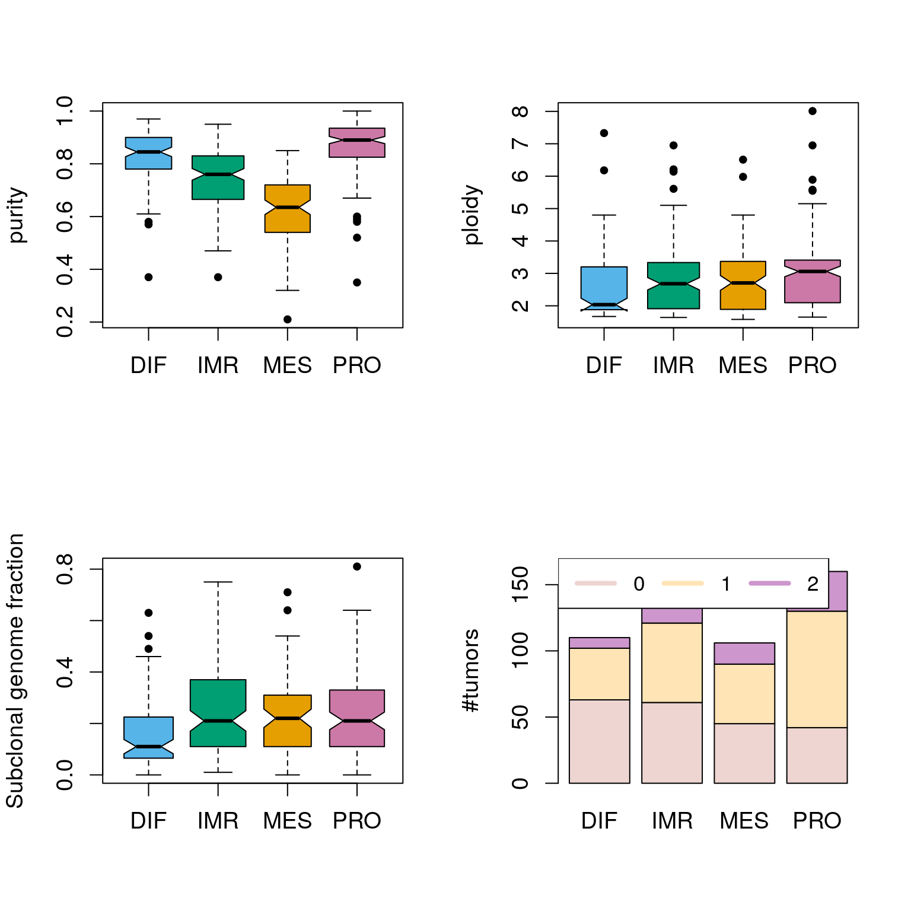
Assessing the significance of differences between subtypes:
cids <- intersect(rownames(ovsubs), rownames(puri.ploi)) subtys <- ovsubs[cids, "cluster"] subtys <- names(stcols)[subtys] pp <- puri.ploi[cids, ] summary(aov(purity ~ subtype, data.frame(purity=pp[,"purity"], subtype=subtys)))
## Df Sum Sq Mean Sq F value Pr(>F)
## subtype 3 4.244 1.415 109.1 <2e-16 ***
## Residuals 511 6.626 0.013
## ---
## Signif. codes: 0 '***' 0.001 '**' 0.01 '*' 0.05 '.' 0.1 ' ' 1
## 7 observations deleted due to missingnesssummary(aov(ploidy ~ subtype, data.frame(ploidy=pp[,"ploidy"], subtype=subtys)))
## Df Sum Sq Mean Sq F value Pr(>F)
## subtype 3 14.4 4.792 4.807 0.0026 **
## Residuals 511 509.4 0.997
## ---
## Signif. codes: 0 '***' 0.001 '**' 0.01 '*' 0.05 '.' 0.1 ' ' 1
## 7 observations deleted due to missingnesssummary(aov(subcl ~ subtype, data.frame(subcl=pp[,"Subclonal.genome.fraction"], subtype=subtys)))
## Df Sum Sq Mean Sq F value Pr(>F)
## subtype 3 0.322 0.10728 4.496 0.0041 **
## Residuals 365 8.708 0.02386
## ---
## Signif. codes: 0 '***' 0.001 '**' 0.01 '*' 0.05 '.' 0.1 ' ' 1
## 153 observations deleted due to missingnesschisq.test(pp[,"Genome.doublings"], subtys)
##
## Pearson's Chi-squared test
##
## data: pp[, "Genome.doublings"] and subtys
## X-squared = 28.319, df = 6, p-value = 8.182e-05Stratifying by purity:
sebin <- stratifyByPurity(ovsubs, puri.ploi, method="equal.bin") lengths(sebin)
## (0.209,0.368] (0.368,0.526] (0.526,0.684] (0.684,0.842] (0.842,1]
## 4 36 79 199 197squint <- stratifyByPurity(ovsubs, puri.ploi, method="quintile") lengths(squint)
## (0.21,0.658] (0.658,0.77] (0.77,0.84] (0.84,0.9] (0.9,1]
## 102 112 103 95 102pvals <- testSubtypes(gisticOV, ovsubs, padj.method="none") adj.pvals <- p.adjust(pvals, method="BH") length(adj.pvals)
## [1] 70head(adj.pvals)
## [1] 0.80025111 0.14279265 0.11317350 0.90288094 0.03365597 0.45058975sum(adj.pvals < 0.1)
## [1] 35hist(pvals, breaks=25, col="firebrick", xlab="Subtype association p-value", main="")
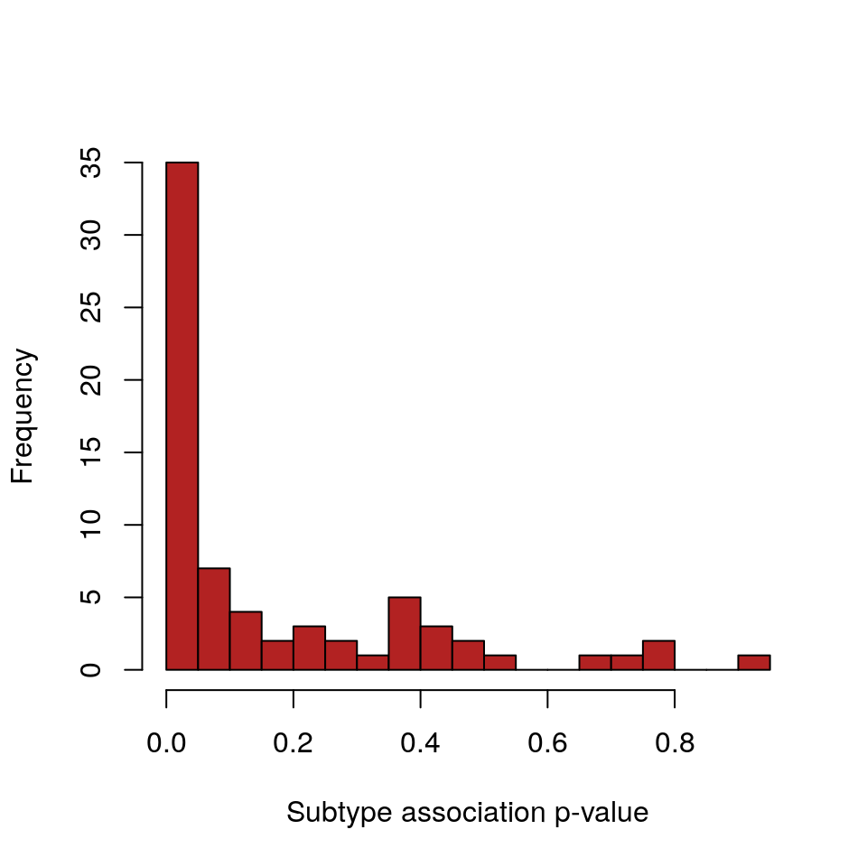
cnv.genes <- getCnvGenesFromTCGA()
sig.ind <- adj.pvals < 0.1 mcols(gisticOV)$subtype <- testSubtypes(gisticOV, ovsubs, what="subtype") mcols(gisticOV)$significance <- ifelse(sig.ind, "*", "") circosSubtypeAssociation(gisticOV, cnv.genes)
plotNrCNAsPerSubtype(mcols(gisticOV)$type[sig.ind], mcols(gisticOV)$subtype[sig.ind])
Annotate cytogenetic bands:
bands.file <- file.path(data.dir, "cytoBand_hg19.txt") cbands <- read.delim(bands.file, header=FALSE) cbands <- cbands[,-5] colnames(cbands) <- c("seqnames", "start", "end", "band") cbands[,4] <- paste0(sub("^chr", "", cbands[,1]), cbands[,4]) cbands <- makeGRangesFromDataFrame(cbands, keep.extra.columns=TRUE) genome(cbands) <- "hg19" cbands
## GRanges object with 862 ranges and 1 metadata column:
## seqnames ranges strand | band
## <Rle> <IRanges> <Rle> | <character>
## [1] chr1 0-2300000 * | 1p36.33
## [2] chr1 2300000-5400000 * | 1p36.32
## [3] chr1 5400000-7200000 * | 1p36.31
## [4] chr1 7200000-9200000 * | 1p36.23
## [5] chr1 9200000-12700000 * | 1p36.22
## ... ... ... ... . ...
## [858] chrY 15100000-19800000 * | Yq11.221
## [859] chrY 19800000-22100000 * | Yq11.222
## [860] chrY 22100000-26200000 * | Yq11.223
## [861] chrY 26200000-28800000 * | Yq11.23
## [862] chrY 28800000-59373566 * | Yq12
## -------
## seqinfo: 24 sequences from hg19 genome; no seqlengthsgisticOV <- annotateCytoBands(gisticOV, cbands) mcols(gisticOV)
## DataFrame with 70 rows and 4 columns
## type subtype significance band
## <character> <integer> <character> <character>
## 1 Deletion 2 1p36.11
## 2 Amplification 1 1p34.3
## 3 Amplification 2 1q21.3
## 4 Deletion 1 1q41
## 5 Amplification 1 * 1q42.3
## ... ... ... ... ...
## 66 Amplification 1 * 20q11.21
## 67 Amplification 1 * 20q13.33
## 68 Deletion 1 21q22.3
## 69 Amplification 4 22q12.2
## 70 Deletion 1 * 22q13.33coocc <- analyzeCooccurence(gisticOV) rownames(coocc) <- mcols(gisticOV)$band ComplexHeatmap::Heatmap(coocc, show_row_names=TRUE, show_column_names=FALSE, column_title="SCNAs", row_title="SCNAs", name="Co-occurrence", row_names_gp = gpar(fontsize = 8))
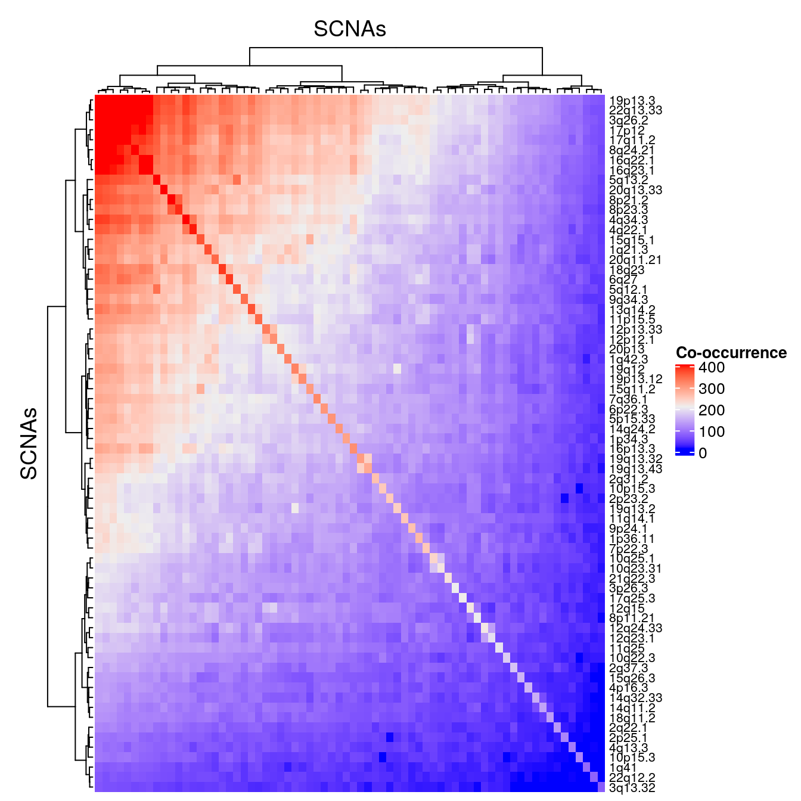
raOV <- getMatchedAbsoluteCalls(absGRL, ovsubs) raOV
## class: RaggedExperiment
## dim: 76062 516
## assays(3): Modal_HSCN_1 Modal_HSCN_2 score
## rownames: NULL
## colnames(516): TCGA-04-1331-01 TCGA-04-1341-01 ... TCGA-61-2094-01
## TCGA-61-2104-01
## colData names(3): cluster silhouetteValue subtyperowRanges(raOV)
## GRanges object with 76062 ranges and 0 metadata columns:
## seqnames ranges strand
## <Rle> <IRanges> <Rle>
## [1] chr1 3218923-32621239 *
## [2] chr1 32661059-45934562 *
## [3] chr1 45935056-55443605 *
## [4] chr1 117773202-117884055 *
## [5] chr1 172450760-172879023 *
## ... ... ... ...
## [76058] chr21 43587562-47678774 *
## [76059] chr22 17423930-28566725 *
## [76060] chr22 28586674-38703589 *
## [76061] chr22 38708404-47224129 *
## [76062] chr22 47227321-49331012 *
## -------
## seqinfo: 22 sequences from an unspecified genome; no seqlengthssubcl.gisticOV <- querySubclonality(raOV, query=rowRanges(gisticOV), sum.method="any", ext=500000) dim(subcl.gisticOV)
## [1] 70 516subcl.gisticOV[1:5,1:5]
## TCGA-04-1331-01 TCGA-04-1341-01 TCGA-04-1342-01
## chr1:26463410-28070286 0 0 NA
## chr1:39387948-40668864 0 0 0
## chr1:149983517-151239128 NA 1 1
## chr1:206816102-221205691 1 1 1
## chr1:233917530-236227932 1 1 1
## TCGA-04-1347-01 TCGA-04-1350-01
## chr1:26463410-28070286 1 0
## chr1:39387948-40668864 1 0
## chr1:149983517-151239128 1 0
## chr1:206816102-221205691 1 0
## chr1:233917530-236227932 1 0Def: Fraction of samples in which a mutation is subclonal.
## Min. 1st Qu. Median Mean 3rd Qu. Max.
## 0.2206 0.3336 0.4075 0.4009 0.4707 0.6004assoc.score <- testSubtypes(gisticOV, ovsubs, what="statistic") cor(assoc.score, subcl.score, method="spearman")
## [1] 0.3097017cor.test(assoc.score, subcl.score, method="spearman", exact=FALSE)$p.value
## [1] 0.009081272Permutation test:
obs.cor <- cor(assoc.score, subcl.score, method="spearman") perm.cor <- replicate(1000, cor(sample(assoc.score), subcl.score, method="spearman")) (sum(perm.cor >= obs.cor) + 1) / (1000 + 1)
## [1] 0.003996004plotCorrelation(assoc.score, subcl.score, subtypes=mcols(gisticOV)$subtype, stcols=stcols[c(4,3,1,2)]) text(x=52.8, y=0.46, "20q11.21\n(BCL2L1)", pos=2) text(x=50, y=0.52, "19p13.12\n(BRD4)", pos=2) text(x=39.489, y=0.332, "12q15\n(FRS2)", pos=4) text(x=32.232, y=0.492, "3q26.2\n(MECOM)", pos=3) text(x=28.883, y=0.6, "8q24.21 (MYC)", pos=2) text(x=29.801, y=0.563, "20q13.33", pos=2) text(x=25.693, y=0.408, "2q31.2 (PDE11A)", pos=4) text(x=26.991, y=0.353, "3p26.3", pos=4) text(x=17.59, y=0.272, "15q15.1 (MGA)", pos=4) text(x=12.389, y=0.22, "8p21.2 (PPP2R2A)", pos=4)
sapply(squint, function(ids) analyzeStrata(ids, absGRL, gisticOV, ovsubs))
## (0.21,0.658] (0.658,0.77] (0.77,0.84] (0.84,0.9] (0.9,1]
## 0.2804451 0.3909148 0.1793591 0.2038877 0.2316690sapply(sebin[-1], function(ids) analyzeStrata(ids, absGRL, gisticOV, ovsubs))
## (0.368,0.526] (0.526,0.684] (0.684,0.842] (0.842,1]
## 0.2298369 0.1667571 0.2469272 0.3788186plotPurityStrata(puri.ploi, ovsubs, gisticOV, absGRL)
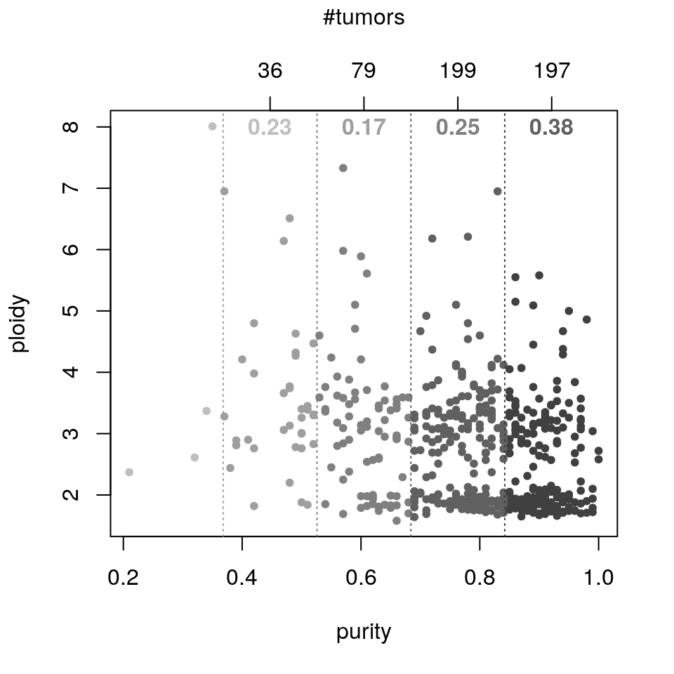
plotPurityStrata(puri.ploi, ovsubs, gisticOV, absGRL, method="quintile")
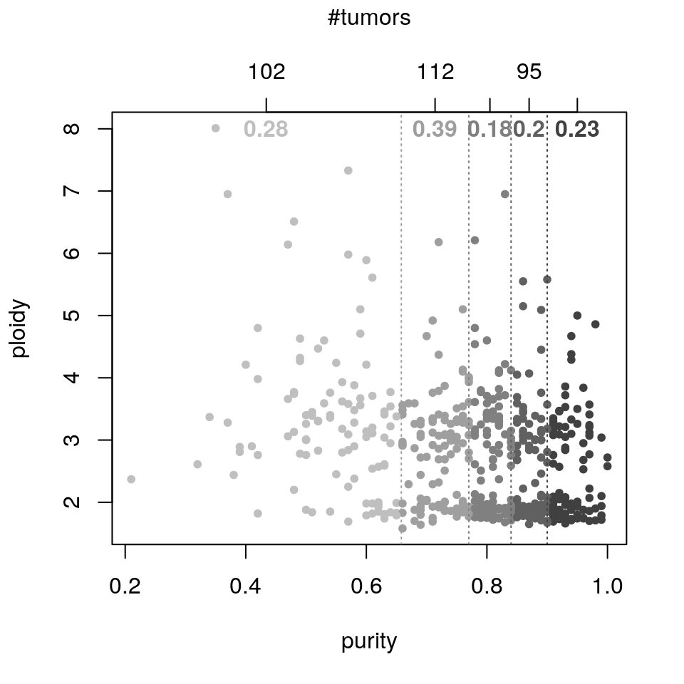
rowRanges(gisticOV)$adj.pval <- adj.pvals rowRanges(gisticOV)$subcl <- subcl.score
ppp.file <- file.path(data.dir, "PureCN_Purity_Ploidy.txt") puriploi.pcn <- read.table(ppp.file) puriploi.pcn <- puriploi.pcn[!duplicated(puriploi.pcn[,1]),] rownames(puriploi.pcn) <- puriploi.pcn[,"Sampleid"] puriploi.pcn <- puriploi.pcn[,-1] puriploi.pcn <- as.matrix(puriploi.pcn) absdiff <- abs(puriploi.pcn[,c("purity", "ploidy")] - puriploi.pcn[,c("Purity_wes", "Ploidy_wes")]) ind <- do.call(order, as.data.frame(absdiff)) puriploi.pcn <- puriploi.pcn[ind,] head(puriploi.pcn)
## purity ploidy Genome.doublings Subclonal.genome.fraction
## TCGA-29-2427-01 0.69 1.80 0 0.02
## TCGA-24-2035-01 0.61 1.98 0 0.05
## TCGA-24-1467-01 0.77 3.98 1 0.09
## TCGA-61-2012-01 0.58 2.90 1 0.12
## TCGA-13-0751-01 0.93 2.84 1 0.10
## TCGA-23-2078-01 0.60 1.98 0 0.17
## Purity_wes Ploidy_wes Purity_snp6 Ploidy_snp6
## TCGA-29-2427-01 0.69 1.804566 0.64 1.805899
## TCGA-24-2035-01 0.61 1.945255 NA NA
## TCGA-24-1467-01 0.78 4.005017 0.71 4.015652
## TCGA-61-2012-01 0.59 2.868254 0.59 2.864081
## TCGA-13-0751-01 0.92 2.808227 NA NA
## TCGA-23-2078-01 0.59 1.944129 0.59 1.995981cor(puriploi.pcn[,"purity"], puriploi.pcn[,"Purity_wes"], use="complete.obs")
## [1] 0.7684567cor(puriploi.pcn[,"Purity_wes"], puriploi.pcn[,"Purity_snp6"], use="complete.obs")
## [1] 0.8265775PureCN calls for S0293689 capture kit:
pcn.call.file <- file.path(data.dir, "PureCN_OV_S0293689_grangeslist.rds") pcn.calls <- readRDS(pcn.call.file) pcn.calls
## GRangesList object of length 171:
## $`TCGA-13-0924-01`
## GRanges object with 545 ranges and 2 metadata columns:
## seqnames ranges strand | CN score
## <Rle> <IRanges> <Rle> | <numeric> <integer>
## chr1 36357-6634553 * | 2 0
## chr1 6634723-10629753 * | 1 0
## chr1 10629823-10659920 * | 2 0
## chr1 10659931-11519947 * | 1 0
## chr1 11520570-11649964 * | 2 0
## . ... ... ... . ... ...
## chr23 153743355-153785541 * | 3 0
## chr23 153785930-154558727 * | 2 0
## chr23 154560355-154642787 * | 3 0
## chr23 154645729-156010146 * | 2 0
## chr23 156010202-156010468 * | 1 0
## -------
## seqinfo: 23 sequences from an unspecified genome; no seqlengths
##
## ...
## <170 more elements># select samples that intersect with ABSOLUTE data isect.samples <- intersect(names(pcn.calls), names(absGRL)) pcn.calls <- pcn.calls[isect.samples] pcn.calls.ra <- RaggedExperiment(pcn.calls) pcn.calls.ra
## class: RaggedExperiment
## dim: 185221 166
## assays(2): CN score
## rownames(185221): '' '' ... '' ''
## colnames(166): TCGA-13-0924-01 TCGA-29-1768-01 ... TCGA-29-1784-01
## TCGA-13-0807-01
## colData names(0):Get corresponding ABSOLUTE calls:
abs.calls <- absGRL[isect.samples] abs.calls <- as.data.frame(abs.calls)[,c(2:5,8:10)] totalCN <- abs.calls[,"Modal_HSCN_1"] + abs.calls[,"Modal_HSCN_2"] abs.calls <- data.frame(abs.calls[,1:4], CN=totalCN, score=abs.calls[,"score"]) abs.calls <- makeGRangesListFromDataFrame(abs.calls, split.field="group_name", keep.extra.columns=TRUE) abs.calls
## GRangesList object of length 166:
## $`TCGA-04-1332-01`
## GRanges object with 104 ranges and 2 metadata columns:
## seqnames ranges strand | CN score
## <Rle> <IRanges> <Rle> | <numeric> <integer>
## [1] chr1 3218923-34828319 * | 3 0
## [2] chr1 34829840-49468025 * | 4 0
## [3] chr1 116676668-166002656 * | 4 1
## [4] chr1 166002866-196696737 * | 4 1
## [5] chr1 196966853-247812431 * | 3 0
## ... ... ... ... . ... ...
## [100] chr20 456452-42230695 * | 3 0
## [101] chr20 42240730-62219837 * | 4 0
## [102] chr21 15372509-36666340 * | 4 0
## [103] chr21 36669447-47678774 * | 4 1
## [104] chr22 17423930-32027449 * | 3 0
## -------
## seqinfo: 22 sequences from an unspecified genome; no seqlengths
##
## ...
## <165 more elements>abs.calls.ra <- RaggedExperiment(abs.calls) abs.calls.ra <- abs.calls.ra[,colnames(pcn.calls.ra)]
OVC GISTIC2 regions on hg19 (ABSOLUTE) and hg38 (PureCN)
gisticOV.ranges.hg19 <- file.path(data.dir, "gisticOV_ranges_hg19.txt") gisticOV.ranges.hg19 <- scan(gisticOV.ranges.hg19, what="character") gisticOV.ranges.hg19 <- GRanges(gisticOV.ranges.hg19) gisticOV.ranges.hg19
## GRanges object with 65 ranges and 0 metadata columns:
## seqnames ranges strand
## <Rle> <IRanges> <Rle>
## [1] chr1 26963410-27570286 *
## [2] chr1 39887948-40168864 *
## [3] chr1 150483517-150739128 *
## [4] chr1 207316102-220705691 *
## [5] chr1 234417530-235727932 *
## ... ... ... ...
## [61] chr20 1-4108014 *
## [62] chr20 30061713-30332464 *
## [63] chr21 42519390-48129895 *
## [64] chr22 30113489-30692352 *
## [65] chr22 48668761-51304566 *
## -------
## seqinfo: 22 sequences from an unspecified genome; no seqlengthsgisticOV.ranges.hg38 <- file.path(data.dir, "gisticOV_ranges_hg38.txt") gisticOV.ranges.hg38 <- scan(gisticOV.ranges.hg38, what="character") gisticOV.ranges.hg38 <- GRanges(gisticOV.ranges.hg38) gisticOV.ranges.hg38
## GRanges object with 65 ranges and 0 metadata columns:
## seqnames ranges strand
## <Rle> <IRanges> <Rle>
## [1] chr1 26636919-27243795 *
## [2] chr1 39422276-39703192 *
## [3] chr1 150511041-150766652 *
## [4] chr1 207142757-220532349 *
## [5] chr1 234281784-235564632 *
## ... ... ... ...
## [61] chr20 79360-4127367 *
## [62] chr20 31473910-31744661 *
## [63] chr21 41147463-46699983 *
## [64] chr22 29717500-30296363 *
## [65] chr22 48272949-50806138 *
## -------
## seqinfo: 22 sequences from an unspecified genome; no seqlengthsSummarize calls in GISTIC regions using either
.largest <- function(score, range, qrange) { return.type <- class(score[[1]]) default.value <- do.call(return.type, list(1)) ind <- which.max(width(range)) res <- vapply(seq_along(score), function(i) score[[i]][ind[i]], default.value) return(res) } pcn.rassay <- qreduceAssay(pcn.calls.ra, query=gisticOV.ranges.hg38, simplifyReduce=.largest, background=2) abs.rassay <- qreduceAssay(abs.calls.ra, query=gisticOV.ranges.hg19, simplifyReduce=.largest, background=2) .weightedmean <- function(score, range, qrange) { w <- width(range) s <- sum(score * w) / sum(w) return(round(s)) } pcn.rassay2 <- qreduceAssay(pcn.calls.ra, query=gisticOV.ranges.hg38, simplifyReduce=.weightedmean, background=2) abs.rassay2 <- qreduceAssay(abs.calls.ra, query=gisticOV.ranges.hg19, simplifyReduce=.weightedmean, background=2)
Evaluate per-sample concordance:
# largest fract.equal <- vapply(seq_along(isect.samples), function(i) mean(pcn.rassay[,i] == abs.rassay[,i]), numeric(1)) fract.type <- vapply(seq_along(isect.samples), function(i) mean(((pcn.rassay[,i] < 2) & (abs.rassay[,i] < 2)) | ((pcn.rassay[,i] > 2) & (abs.rassay[,i] > 2)) | ((pcn.rassay[,i] == 2) & (abs.rassay[,i] == 2))), numeric(1)) fract.diff1 <- vapply(seq_along(isect.samples), function(i) mean((pcn.rassay[,i] == abs.rassay[,i]) | (pcn.rassay[,i] == abs.rassay[,i] + 1) | (pcn.rassay[,i] == abs.rassay[,i] - 1)), numeric(1)) # weighted mean fract.equal2 <- vapply(seq_along(isect.samples), function(i) mean(pcn.rassay2[,i] == abs.rassay2[,i]), numeric(1)) fract.type2 <- vapply(seq_along(isect.samples), function(i) mean(((pcn.rassay2[,i] < 2) & (abs.rassay2[,i] < 2)) | ((pcn.rassay2[,i] > 2) & (abs.rassay2[,i] > 2)) | ((pcn.rassay2[,i] == 2) & (abs.rassay2[,i] == 2))), numeric(1)) fract.diff12 <- vapply(seq_along(isect.samples), function(i) mean((pcn.rassay2[,i] == abs.rassay2[,i]) | (pcn.rassay2[,i] == abs.rassay2[,i] + 1) | (pcn.rassay2[,i] == abs.rassay2[,i] - 1)), numeric(1))
Plot concordance:
par(mar=c(5.1, 4.1, 4.1, 8.1), xpd=TRUE) boxplot(fract.equal, fract.equal2, fract.type, fract.type2, fract.diff1, fract.diff12, col=rep(c(cb.blue, cb.red), 3), names=rep(c("equal", "type", "diff1"), each=2), ylab="Fraction of concordant GISTIC2 regions") legend("topright", inset=c(-0.3,0), legend=c("largest", "wmean"), col=c(cb.blue, cb.red), lwd=2)
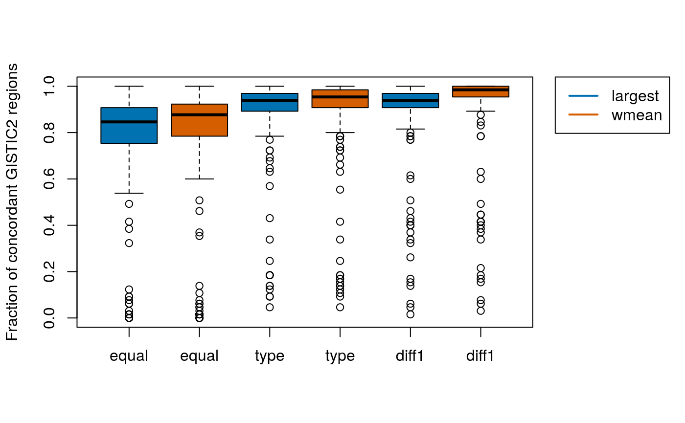
selectAbsCalls <- function(sample, min.size=3000000) { gr <- absGRL[[sample]] gr.3MB <- width(gr) > min.size is.loss <- (gr$Modal_HSCN_1 + gr$Modal_HSCN_2) < 2 is.subcl <- gr$score == 1 ind <- gr.3MB & is.loss & is.subcl return(gr[ind]) } (abs.calls <- selectAbsCalls(rownames(puriploi.pcn)[1]))
## GRanges object with 4 ranges and 3 metadata columns:
## seqnames ranges strand | Modal_HSCN_1 Modal_HSCN_2 score
## <Rle> <IRanges> <Rle> | <numeric> <numeric> <integer>
## [1] chr13 49131496-77266538 * | 0 1 1
## [2] chr13 78155543-114987333 * | 0 1 1
## [3] chr14 23708769-32553018 * | 0 1 1
## [4] chr19 15079104-28465910 * | 0 1 1
## -------
## seqinfo: 22 sequences from an unspecified genome; no seqlengthsrtracklayer::liftOver only provides chain mappingschain.file <- file.path(data.dir, "hg19ToHg38.over.chain") ch <- rtracklayer::import.chain(chain.file) (hg19.call <- absGRL[[1]][1])
## GRanges object with 1 range and 3 metadata columns:
## seqnames ranges strand | Modal_HSCN_1 Modal_HSCN_2 score
## <Rle> <IRanges> <Rle> | <numeric> <numeric> <integer>
## [1] chr1 3218923-74907316 * | 2 2 0
## -------
## seqinfo: 22 sequences from an unspecified genome; no seqlengths(blocks <- rtracklayer::liftOver(hg19.call, ch))
## GRangesList object of length 1:
## [[1]]
## GRanges object with 1072 ranges and 3 metadata columns:
## seqnames ranges strand | Modal_HSCN_1 Modal_HSCN_2
## <Rle> <IRanges> <Rle> | <numeric> <numeric>
## [1] chr1 3302359-3928704 * | 2 2
## [2] chr1 3935210-3936533 * | 2 2
## [3] chr1 3936534-7366717 * | 2 2
## [4] chr1 7366718-7382536 * | 2 2
## [5] chr1 7382538-8504448 * | 2 2
## ... ... ... ... . ... ...
## [1068] chr1 13203465-13203520 * | 2 2
## [1069] chr1 13203521-13203532 * | 2 2
## [1070] chr1 13203533-13203548 * | 2 2
## [1071] chr20 38461961-38462015 * | 2 2
## [1072] chr1 12893309-12893335 * | 2 2
## score
## <integer>
## [1] 0
## [2] 0
## [3] 0
## [4] 0
## [5] 0
## ... ...
## [1068] 0
## [1069] 0
## [1070] 0
## [1071] 0
## [1072] 0
## -------
## seqinfo: 2 sequences from an unspecified genome; no seqlengthsblocks <- unlist(blocks) # harmonize chromosome by majority vote tab <- table(as.character(seqnames(blocks))) nmax <- names(tab)[which.max(tab)] # collapse blocks blocks <- blocks[seqnames(blocks) == nmax] (hg38.call <- range(reduce(blocks)))
## GRanges object with 1 range and 0 metadata columns:
## seqnames ranges strand
## <Rle> <IRanges> <Rle>
## [1] chr1 3302359-74441632 *
## -------
## seqinfo: 2 sequences from an unspecified genome; no seqlengthstests <- testSubtypes(gisticOV, ovsubs, what="full") extraL <- stratifySubclonality(gisticOV, subcl.gisticOV, ovsubs, tests, st.names = names(stcols)[c(4,3,1,2)])
# highest subtype association ind <- order(assoc.score, decreasing=TRUE) rowRanges(gisticOV)[ind[1:2]]
## GRanges object with 2 ranges and 6 metadata columns:
## seqnames ranges strand | type subtype significance
## <Rle> <IRanges> <Rle> | <character> <integer> <character>
## [1] chr20 30061713-30332464 * | Amplification 1 *
## [2] chr19 15333311-15422141 * | Amplification 1 *
## band adj.pval subcl
## <character> <numeric> <numeric>
## [1] 20q11.21 1.44652e-07 0.485465
## [2] 19p13.12 2.04648e-07 0.507163
## -------
## seqinfo: 23 sequences from an unspecified genome; no seqlengths# 20q11.21 (BCL2L1) x <- tests[[ind[1]]] (ot <- x$observed)
## subtys
## x 1 2 3 4
## 0 44 41 72 68
## 1 77 55 32 59
## 2 55 14 14 24x$expected
## subtys
## x 1 2 3 4
## 0 71.35135 44.59459 47.83784 61.21622
## 1 70.71712 44.19820 47.41261 60.67207
## 2 33.93153 21.20721 22.74955 29.11171diff <- x$observed - x$expected (csums <- colSums(diff^2 / x$expected))
## 1 2 3 4
## 24.124538 5.378997 20.579286 1.695401# 19p13.12 (BRD4) x <- tests[[ind[2]]] (ot <- x$observed)
## subtys
## x 1 2 3 4
## 0 62 67 48 76
## 1 49 36 45 54
## 2 65 7 25 21x$expected
## subtys
## x 1 2 3 4
## 0 80.23063 50.14414 53.79099 68.83423
## 1 58.34955 36.46847 39.12072 50.06126
## 2 37.41982 23.38739 25.08829 32.10450diff <- x$observed - x$expected (csums <- colSums(diff^2 / x$expected))
## 1 2 3 4
## 25.968516 17.154615 1.507324 4.896757# highest subclonality ind <- order(subcl.score, decreasing=TRUE) rowRanges(gisticOV)[ind[1:2]]
## GRanges object with 2 ranges and 6 metadata columns:
## seqnames ranges strand | type subtype
## <Rle> <IRanges> <Rle> | <character> <integer>
## [1] chr8 128694547-129309687 * | Amplification 1
## [2] chr20 62137482-63025520 * | Amplification 1
## significance band adj.pval subcl
## <character> <character> <numeric> <numeric>
## [1] * 8q24.21 0.000497912 0.600432
## [2] * 20q13.33 0.000428776 0.562982
## -------
## seqinfo: 23 sequences from an unspecified genome; no seqlengthsx <- extraL[order(subcl.score, decreasing=TRUE)[c(1,2,7)]] names(x) <- c("8q24.21 (MYC)", c("20q13.33"), c("19p13.12 (BRD4)")) x <- c(x, extraL[order(subcl.score)[c(1,7,9)]]) names(x)[4:6] <- c("8p21.2 (PPP2R2A)", "15q15.1 (MGA)", "15q11.2 (SNRPN)") ggplotSubtypeStrata(x[c(4:6,1:3)], rep(c("loss","gain"), each=3))
Strongest subtype association:
ind <- order(assoc.score, decreasing=TRUE) x <- extraL[ind[c(1,3:5,7,9)]] names(x) <- c("20q11.21 (BCL2L1)", "12q15 (FRS2)", "3q26.2 (MECOM)", "6p22.3 (ID4)", "20p13", "12p13.33") ggplotSubtypeStrata(x, rep("gain", 6))
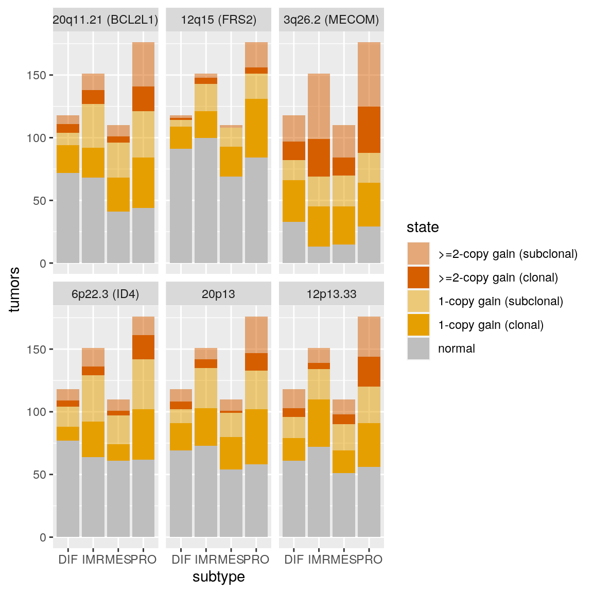
Regions of frequent loss in HGSOC:
x <- extraL[c(34,44,55)] names(x) <- c("10q23.31 (PTEN)", "13q14.2 (RB1)", "17q11.2 (NF1)") ggplotSubtypeStrata(x, rep("loss", 3))
Enrichment of deletions in predom. clonal regions
rowRanges(gisticOV)$type[subcl.score < 0.3]
## [1] "Amplification" "Deletion" "Deletion" "Deletion"
## [5] "Deletion" "Deletion" "Deletion" "Deletion"
## [9] "Deletion" "Deletion" "Deletion" "Deletion"subcl.scores <- lapply(allCT, function(ct) ct$subcl.score) plotSubclonalityDistributions(subcl.scores)
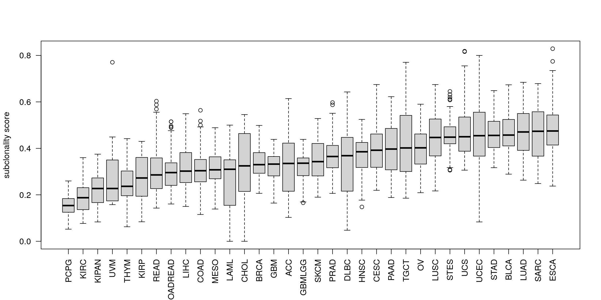
gisticSARC <- gistic2RSE(ctype="SARC", peak="wide") sarcsubs <- getBroadSubtypes(ctype="SARC", clust.alg="CNMF")
## Warning in getBroadSubtypes(ctype = "SARC", clust.alg = "CNMF"): mRNA clustering
## not available for SARC - mRNAseq clustering is taken insteadtable(sarcsubs$cluster)
##
## 1 2 3
## 116 78 65pvals <- suppressWarnings( testSubtypes(gisticSARC, sarcsubs, padj.method="none") ) length(pvals)
## [1] 64## [1] 41hist(pvals, breaks=25, col="firebrick",xlab="Subtype association p-value", main="")
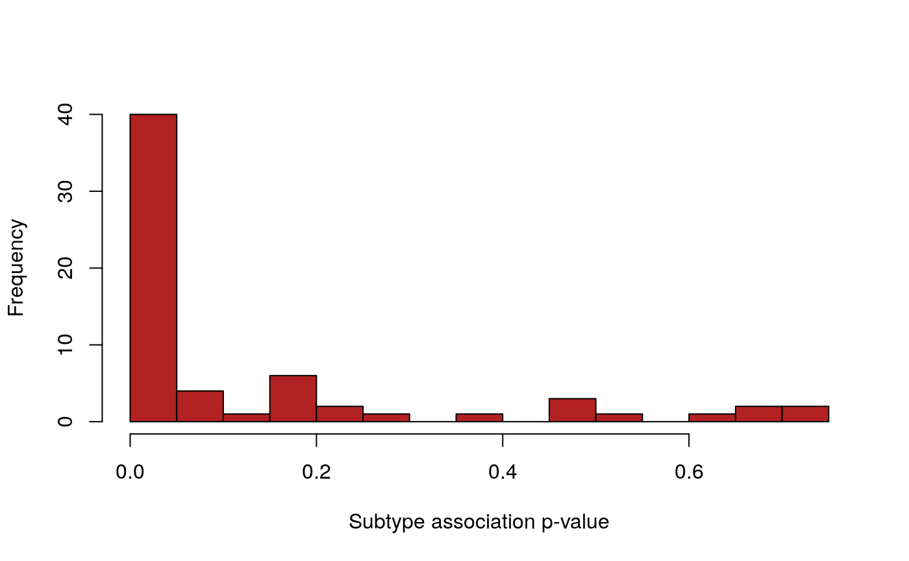
sarc.clin <- RTCGAToolbox::getFirehoseData(dataset="SARC", runDate="20160128")
## gdac.broadinstitute.org_SARC.Clinical_Pick_Tier1.Level_4.2016012800.0.0.tar.gz## gdac.broadinstitute.org_SARC.Clinical_Pick_Tier1.Level_4.2016012800.0.0sarc.clin <- RTCGAToolbox::getData(sarc.clin, "clinical") ids <- rownames(sarcsubs) ids <- tolower(ids) ids <- gsub("-", ".", ids) ids <- substring(ids, 1, 12) sarcsubs$histType <- sarc.clin[ids,"histological_type"] lapply(1:3, function(cl) table(sarcsubs[sarcsubs$cluster == cl,"histType"]))
## [[1]]
##
## dedifferentiated liposarcoma
## 38
## giant cell 'mfh' / undifferentiated pleomorphic sarcoma with giant cells
## 1
## leiomyosarcoma (lms)
## 12
## malignant peripheral nerve sheath tumors (mpnst)
## 1
## myxofibrosarcoma
## 23
## pleomorphic 'mfh' / undifferentiated pleomorphic sarcoma
## 25
## undifferentiated pleomorphic sarcoma (ups)
## 16
##
## [[2]]
##
## dedifferentiated liposarcoma leiomyosarcoma (lms)
## 1 77
##
## [[3]]
##
## dedifferentiated liposarcoma
## 19
## desmoid tumor
## 2
## leiomyosarcoma (lms)
## 15
## malignant peripheral nerve sheath tumors (mpnst)
## 8
## myxofibrosarcoma
## 2
## pleomorphic 'mfh' / undifferentiated pleomorphic sarcoma
## 4
## sarcoma; synovial; poorly differentiated
## 2
## synovial sarcoma - biphasic
## 2
## synovial sarcoma - monophasic
## 6
## undifferentiated pleomorphic sarcoma (ups)
## 5assoc.score <- suppressWarnings( testSubtypes(gisticSARC, sarcsubs, what="statistic") ) raSARC <- getMatchedAbsoluteCalls(absGRL, sarcsubs) subcl.gisticSARC <- querySubclonality(raSARC, query=rowRanges(gisticSARC), sum.method="any") subcl.score <- rowMeans(subcl.gisticSARC, na.rm=TRUE) summary(subcl.score)
## Min. 1st Qu. Median Mean 3rd Qu. Max.
## 0.2486 0.3667 0.4736 0.4701 0.5573 0.6788cor(assoc.score, subcl.score, method="spearman")
## [1] -0.364473cor.test(assoc.score, subcl.score, method="spearman", exact=FALSE)$p.value
## [1] 0.003067494sarc.cols <- stcols[c(1,3,2)] names(sarc.cols) <- c("MFS/UPS", "LMS", "DDLPS") sts <- suppressWarnings( testSubtypes(gisticSARC, sarcsubs, what="subtype") ) sts <- names(sarc.cols)[sts] plotCorrelation(assoc.score, subcl.score, subtypes=sts, stcols=sarc.cols, lpos="right") # top assoc text(x=56.885, y=0.548, "1p36.32\n(TP73)", pos=2) text(x=36.908, y=0.336, "6q25.1\n(UST)", pos=4) text(x=33.943, y=0.275, "10q23.31 (PTEN)", pos=2) text(x=30.257, y=0.249, "13q14.2 (RB1)", pos=2) text(x=27.44, y=0.435, "10q26.3\n(SPRN)", pos=4) text(x=25.501, y=0.362, "1p32.1\n(JUN)", pos=4) # top subcl text(x=10.116, y=0.679, "8q", pos=4) text(x=6.37, y=0.678, "9q34", pos=2) text(x=8.586, y=0.662, "17q", pos=4) text(x=7.658, y=0.65, "5p15.33\n(TERT)", pos=2) text(x=19.497, y=0.625, "8p23.2 (CSMD1)", pos=4) text(x=17.4, y=0.625, "20q13.33", pos=2) text(x=55.915, y=0.262, "12q15 (MDM2)", pos=2)
gisticSARC <- annotateCytoBands(gisticSARC, cbands) rowRanges(gisticSARC)$assoc.score <- assoc.score rowRanges(gisticSARC)$subcl <- subcl.score rowRanges(gisticSARC)$subtype <- sts ind.assoc <- order(assoc.score, decreasing=TRUE) ind.subcl <- order(subcl.score, decreasing=TRUE) rowRanges(gisticSARC)[ind.assoc]
## GRanges object with 64 ranges and 5 metadata columns:
## seqnames ranges strand | type band
## <Rle> <IRanges> <Rle> | <character> <character>
## [1] chr1 1-5923787 * | Deletion 1p36.32
## [2] chr12 69178021-69244387 * | Amplification 12q15
## [3] chr6 148810209-149693136 * | Amplification 6q25.1
## [4] chr10 89617158-89755074 * | Deletion 10q23.31
## [5] chr13 48875329-49064807 * | Deletion 13q14.2
## ... ... ... ... . ... ...
## [60] chr6 66417081-104031403 * | Deletion 6q14.1
## [61] chr11 1-496996 * | Deletion 11p15.5
## [62] chr12 132611527-133851895 * | Deletion 12q24.33
## [63] chr18 1-5145388 * | Deletion 18p11.32
## [64] chr22 45095899-51304566 * | Deletion 22q13.31
## assoc.score subcl subtype
## <numeric> <numeric> <character>
## [1] 56.8853 0.548193 LMS
## [2] 55.9154 0.261905 LMS
## [3] 36.9080 0.336000 MFS/UPS
## [4] 33.9432 0.274510 LMS
## [5] 30.2573 0.248588 DDLPS
## ... ... ... ...
## [60] 1.450279 0.585799 DDLPS
## [61] 1.238339 0.445205 DDLPS
## [62] 0.904199 0.500000 LMS
## [63] 0.742853 0.443709 LMS
## [64] 0.641115 0.610738 DDLPS
## -------
## seqinfo: 23 sequences from an unspecified genome; no seqlengthsrowRanges(gisticSARC)[ind.subcl]
## GRanges object with 64 ranges and 5 metadata columns:
## seqnames ranges strand | type band
## <Rle> <IRanges> <Rle> | <character> <character>
## [1] chr8 54604081-146364022 * | Amplification 8q24.3
## [2] chr9 134952380-141213431 * | Deletion 9q34.3
## [3] chr17 57292827-81195210 * | Amplification 17q25.3
## [4] chr5 1-5129938 * | Deletion 5p15.33
## [5] chr8 1-4251018 * | Deletion 8p23.3
## ... ... ... ... . ... ...
## [60] chr3 86917447-87350419 * | Amplification 3p12.1
## [61] chr10 89617158-89755074 * | Deletion 10q23.31
## [62] chr8 37911089-38852966 * | Amplification 8p11.22
## [63] chr12 69178021-69244387 * | Amplification 12q15
## [64] chr13 48875329-49064807 * | Deletion 13q14.2
## assoc.score subcl subtype
## <numeric> <numeric> <character>
## [1] 10.11579 0.678788 DDLPS
## [2] 6.36997 0.678322 LMS
## [3] 8.58887 0.664557 DDLPS
## [4] 7.65827 0.664430 LMS
## [5] 19.49664 0.625000 MFS/UPS
## ... ... ... ...
## [60] 18.08966 0.311475 MFS/UPS
## [61] 33.94320 0.274510 LMS
## [62] 3.39771 0.265152 MFS/UPS
## [63] 55.91538 0.261905 LMS
## [64] 30.25732 0.248588 DDLPS
## -------
## seqinfo: 23 sequences from an unspecified genome; no seqlengthstests <- suppressWarnings( testSubtypes(gisticSARC, sarcsubs, what="full") ) extraL <- stratifySubclonality(gisticSARC, subcl.gisticSARC, sarcsubs, tests, st.names=names(sarc.cols))
x <- extraL[order(subcl.score)[c(1,2,4)]] # loss, gain, loss names(x) <- c("13q14.2 (RB1)", "12q15 (MDM2)", "10q23.31 (PTEN)") sarc.hscl <- extraL[rowRanges(gisticSARC)$band %in% c("1p36.32", "8p23.3", "20q13.33")] x <- c(x, sarc.hscl) # loss, loss, loss names(x)[4:6] <- c("1p36.32 (TP73)", "8p23.2 (CSMD1)", "20q13.33") ggplotSubtypeStrata(x, c("loss","gain", rep("loss", 3), "gain"))
Using histopathological classification for subtype assignment:
histcl <- rep(4, nrow(sarcsubs)) ind <- grep("myxofibrosarcoma", sarcsubs$histType) histcl[ind] <- 1 ind <- grep("undifferentiated pleomorphic sarcoma", sarcsubs$histType) histcl[ind] <- 1 ind <- grep("leiomyosarcoma", sarcsubs$histType) histcl[ind] <- 2 ind <- grep("dedifferentiated liposarcoma", sarcsubs$histType) histcl[ind] <- 3 histsubs <- sarcsubs[histcl != 4,] histsubs$cluster <- histcl[histcl != 4]
assoc.score <- suppressWarnings( testSubtypes(gisticSARC, histsubs, what="statistic") ) raSARC <- getMatchedAbsoluteCalls(absGRL, histsubs) subcl.gisticSARC <- querySubclonality(raSARC, query=rowRanges(gisticSARC), sum.method="any") subcl.score <- rowMeans(subcl.gisticSARC, na.rm=TRUE) summary(subcl.score)
## Min. 1st Qu. Median Mean 3rd Qu. Max.
## 0.2308 0.3677 0.4748 0.4713 0.5511 0.6788cor(assoc.score, subcl.score, method="spearman")
## [1] -0.3810298cor.test(assoc.score, subcl.score, method="spearman", exact=FALSE)$p.value
## [1] 0.001894787Genes considered by the consensusOV classifier:
library(consensusOV) clgenes <- getClassifierGenes() clgenes
## [1] "10158" "10278" "10395" "10437" "10630" "10635" "10982" "11343"
## [9] "1191" "1288" "1289" "1295" "1318" "1490" "1890" "1901"
## [17] "2123" "2149" "2207" "22836" "22919" "23022" "23220" "2335"
## [25] "2524" "259173" "26271" "27286" "27299" "301" "3268" "3627"
## [33] "3902" "3903" "3912" "3925" "3934" "3956" "4038" "4082"
## [41] "4162" "4237" "4250" "4261" "4323" "4430" "4681" "4837"
## [49] "4921" "50615" "51091" "51177" "5118" "54020" "54587" "547"
## [57] "54961" "55240" "55340" "5569" "55859" "55930" "56937" "57007"
## [65] "5732" "5920" "60489" "6297" "64092" "642" "6503" "65108"
## [73] "65244" "6602" "6624" "6782" "7216" "7345" "7456" "775"
## [81] "7805" "79070" "79083" "800" "81831" "834" "83439" "8460"
## [89] "84707" "8522" "8533" "8564" "861" "8655" "8764" "9246"
## [97] "9447" "9610" "9766" "9854" "9891" "9940" "9961"Single cell data restricted to classifier genes:
sc.file <- file.path(data.dir, "scRNAseq_consensusOV_genes.txt") sc.expr <- as.matrix(read.delim(sc.file, row.names=1L)) dim(sc.expr)
## [1] 103 67sc.expr[1:5,1:5]
## Bulk_2 X1_C01 X1_C02 X1_C03 X1_C08
## 26271 19.62 0 0 0 0.00
## 6782 47.73 0 0 0 79.25
## 57007 93.28 0 0 0 0.00
## 81831 0.00 0 0 0 16.29
## 5569 5.15 0 0 0 0.00# exclude all zero ind <- apply(sc.expr, 1, function(x) all(x == 0)) sc.expr <- sc.expr[!ind,] dim(sc.expr)
## [1] 99 67Get consensus subtypes:
Manual cell type annotation from Winterhoff el al:
c2t.file <- file.path(data.dir, "scRNAseq_celltypes.txt") c2t <- read.delim(c2t.file, as.is=TRUE) n <- paste0("X", c2t[,1]) c2t <- c2t[,2] names(c2t) <- n head(c2t)
## X1_C02 X1_C15 X1_C27 X1_C30 X1_C41 X1_C42
## "Stroma" "Stroma" "Stroma" "Stroma" "Stroma" "Stroma"table(c2t)
## c2t
## Epithelial Stroma
## 37 29Expression heatmap incl. subtype and cell type annotation:
sind <- 2:ncol(sc.expr) sc.subtypes <- consensus.subtypes sc.subtypes$consensusOV.subtypes <- sc.subtypes$consensusOV.subtypes[sind] sc.subtypes$rf.probs <- sc.subtypes$rf.probs[sind, c(1:2,4,3)] scHeatmap(sc.expr[,sind], sc.subtypes)
Subtype by cell type:
# subtype st <- consensus.subtypes$consensusOV.subtypes[sind] st <- sub("_consensus$", "", st) ct <- c2t[colnames(sc.expr)[sind]] ept <- table(st[ct=="Epithelial"]) ept <- round(ept / sum(ept), digits=3) ept
##
## DIF IMR
## 0.108 0.892##
## IMR MES
## 0.724 0.276Contrasting manual with computational cell type annotation:
## class: SummarizedExperiment
## dim: 17652 93
## metadata(1): annotation
## assays(1): ''
## rownames(17652): A1BG A1CF ... ZZEF1 ZZZ3
## rowData names(0):
## colnames(93): Bulk_2 X1_C01 ... X2_C89 X2_C95
## colData names(0):assay(sc, "logcounts") <- log(assay(sc) + 1, 2) hpc <- transferCellType(sc[,2:ncol(sc)], "hpca") encode <- transferCellType(sc[,2:ncol(sc)], "encode")
Verhaak subtypes:
sc.entrez <- EnrichmentBrowser::idMap(sc, from = "SYMBOL", to = "ENTREZID") sc.entrez <- sc.entrez[rowSums(assay(sc.entrez)[,2:93], na.rm = TRUE) > 10,] vst <- consensusOV::get.verhaak.subtypes(assay(sc.entrez, "logcounts"), names(sc.entrez))
## Setting parallel calculations through a MulticoreParam back-end
## with workers=4 and tasks=100.
## Estimating ssGSEA scores for 4 gene sets.
##
|
| | 0%
|
|= | 1%
|
|== | 2%
|
|== | 3%
|
|=== | 4%
|
|==== | 5%
|
|===== | 6%
|
|===== | 8%
|
|====== | 9%
|
|======= | 10%
|
|======== | 11%
|
|======== | 12%
|
|========= | 13%
|
|========== | 14%
|
|=========== | 15%
|
|=========== | 16%
|
|============ | 17%
|
|============= | 18%
|
|============== | 19%
|
|============== | 20%
|
|=============== | 22%
|
|================ | 23%
|
|================= | 24%
|
|================= | 25%
|
|================== | 26%
|
|=================== | 27%
|
|==================== | 28%
|
|==================== | 29%
|
|===================== | 30%
|
|====================== | 31%
|
|======================= | 32%
|
|======================= | 33%
|
|======================== | 34%
|
|========================= | 35%
|
|========================== | 37%
|
|========================== | 38%
|
|=========================== | 39%
|
|============================ | 40%
|
|============================= | 41%
|
|============================= | 42%
|
|============================== | 43%
|
|=============================== | 44%
|
|================================ | 45%
|
|================================ | 46%
|
|================================= | 47%
|
|================================== | 48%
|
|=================================== | 49%
|
|=================================== | 51%
|
|==================================== | 52%
|
|===================================== | 53%
|
|====================================== | 54%
|
|====================================== | 55%
|
|======================================= | 56%
|
|======================================== | 57%
|
|========================================= | 58%
|
|========================================= | 59%
|
|========================================== | 60%
|
|=========================================== | 61%
|
|============================================ | 62%
|
|============================================ | 63%
|
|============================================= | 65%
|
|============================================== | 66%
|
|=============================================== | 67%
|
|=============================================== | 68%
|
|================================================ | 69%
|
|================================================= | 70%
|
|================================================== | 71%
|
|================================================== | 72%
|
|=================================================== | 73%
|
|==================================================== | 74%
|
|===================================================== | 75%
|
|===================================================== | 76%
|
|====================================================== | 77%
|
|======================================================= | 78%
|
|======================================================== | 80%
|
|======================================================== | 81%
|
|========================================================= | 82%
|
|========================================================== | 83%
|
|=========================================================== | 84%
|
|=========================================================== | 85%
|
|============================================================ | 86%
|
|============================================================= | 87%
|
|============================================================== | 88%
|
|============================================================== | 89%
|
|=============================================================== | 90%
|
|================================================================ | 91%
|
|================================================================= | 92%
|
|================================================================= | 94%
|
|================================================================== | 95%
|
|=================================================================== | 96%
|
|==================================================================== | 97%
|
|==================================================================== | 98%
|
|===================================================================== | 99%
|
|======================================================================| 100%vst <- as.character(vst$Verhaak.subtypes) names(vst) <- colnames(sc.entrez)
acol <- data.frame(Winterhoff = c2t, Verhaak = vst[names(c2t)]) SingleR::plotScoreHeatmap(encode[names(c2t),], annotation_col = acol)
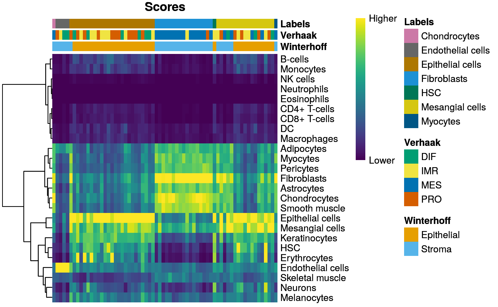
SingleR::plotScoreHeatmap(hpc[names(c2t),], annotation_col = acol)
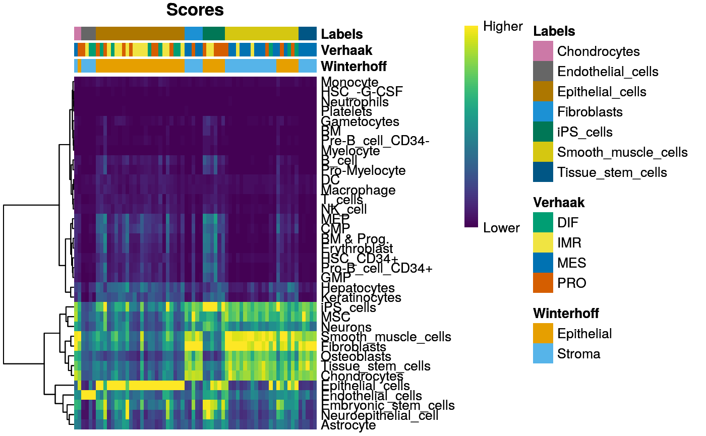 ## Margin score distribution
Margin scores in comparison to TCGA bulk:
m100 <- c(0.0060, 0.1425, 0.2450, 0.2551, 0.3580, 0.8460) m800 <- c(0.0020, 0.1270, 0.2050, 0.2061, 0.2860, 0.4420) tcga.ma <- c(0.0060, 0.2265, 0.5250, 0.5196, 0.8115, 1.0000) tcga.rseq <- c(0.0000, 0.2700, 0.6020, 0.5524, 0.8280, 1.0000) tcga.rseq.down <- c(0.0060, 0.2610, 0.5220, 0.5085, 0.7740, 0.9940) names(m100) <- c("Min.", "1st Qu.", "Median", "Mean", "3rd Qu.", "Max.") names(m800) <- names(tcga.ma) <- names(tcga.rseq.down) <- names(tcga.rseq) <- names(m100) df <- data.frame( x=c("scRNAseq100", "scRNAseq800", "TCGA-RNAseq \n (downsampled)", "TCGA-RNAseq", "TCGA-Marray"), t(cbind(m100, m800, tcga.rseq.down, tcga.rseq, tcga.ma))) colnames(df)[2:7] <- c("y0", "y25", "y50", "mean", "y75", "y100") df[,1] <- factor(df[,1], levels=rev(df[,1])) my.predictions.margins <- subtypeHeterogeneity::margin(consensus.subtypes$rf.probs)[sind] df[1,"y100"] <- quantile(my.predictions.margins, 0.95) df.points <- data.frame(x=c(5,4,5), y=c(0.482, 0.452, 0.846)) ggplot() + geom_boxplot(data=df, aes(x=x, ymin=y0, lower=y25, middle=y50, upper=y75, ymax=y100), stat="identity", fill=factor(c(rep(cb.blue, 3), rep(cb.red, 2)))) + geom_point(data=df.points[1:2,], aes(x=x, y=y), color=cb.red) + geom_point(data=df.points[3,], aes(x=x, y=y)) + geom_text(data=df.points[1:2,], aes(x=x, y=y), color=cb.red, label="Bulk", hjust=0, nudge_x = 0.2, size=6) + xlab("") + ylab("margin score") + theme_grey(base_size = 18) + coord_flip()
Consistency of subtpye calls (TCGA OV microarray vs RNA-seq):
m <- matrix(c(73, 6, 1, 2, 7, 67, 1, 1, 1, 1, 76, 0, 1, 1, 4, 55), ncol=4, nrow=4, byrow=TRUE) rownames(m) <- colnames(m) <- c("IMR", "DIF", "PRO", "MES") m <- m[c(2,1,4,3), c(2,1,4,3)] df <- reshape2::melt(m) df[,2] <- factor(df[,2], levels=rev(levels(df[,2]))) df$color <- ifelse(df$value > 10, "white", "grey46") df$class <- "Top100%" m2 <- matrix(c(46, 0, 0, 0, 1, 47, 0, 0, 0, 0, 59, 0, 0, 0, 0, 40), ncol=4, nrow=4, byrow=TRUE) rownames(m2) <- colnames(m2) <- c("IMR", "DIF", "PRO", "MES") m2 <- m2[c(2,1,4,3), c(2,1,4,3)] df2 <- reshape2::melt(m2) df2[,2] <- factor(df2[,2], levels=rev(levels(df2[,2]))) df2$color <- ifelse(df2$value > 10, "white", "grey46") df2$class <- "Top75%" df <- rbind(df,df2) colnames(df)[1:2] <- c("Microarray", "RNAseq") ggplot(df, aes(Microarray, RNAseq)) + geom_tile(data=df, aes(fill=value), color="white") + scale_fill_gradient2(low="white", high="red", guide=FALSE) + geom_text(aes(label=value), size=6, color=df$color) + theme(axis.text.x = element_text(angle=45, vjust=1, hjust=1, size=12), axis.text.y = element_text(size=12), strip.text.x = element_text(size=12, face="bold")) + coord_equal() + facet_wrap( ~ class, ncol = 2)
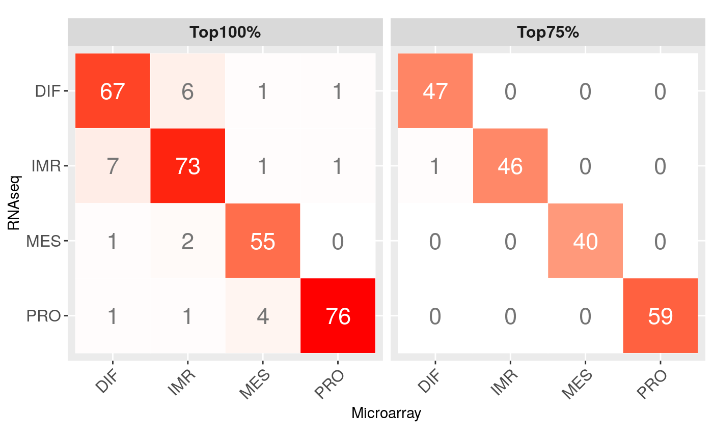
# Supplementary Table S8A from Verhaak et al, JCI, 2013 verhaak.file <- file.path(data.dir, "Verhaak_supplementT8A.txt") verhaak800 <- getExtendedVerhaakSignature(verhaak.file, nr.genes.per.subtype=200) length(verhaak800)
## [1] 800head(verhaak800)
## [1] "ABHD11" "ABTB2" "ACE2" "ACP6" "ACSBG1" "ACSL5"# Supplementary Table S7 from Verhaak et al, JCI, 2013 verhaak100.file <- file.path(data.dir, "Verhaak_100genes.txt") verhaak100 <- read.delim(verhaak100.file, as.is=TRUE) verhaak100 <- verhaak100[2:101,1]
Merge:
Build extended training set based on extended verhaak signature:
selectGenes <- function(eset) { ind <- fData(eset)$gene %in% verhaak800 return(eset[ind,]) } eset.file <- file.path(data.dir, "esets.rescaled.classified.filtered.RData") esets <- get(load(eset.file)) esets.merged <- consensusOV:::dataset.merging(esets, method = "intersect", standardization = "none")
## Warning in `[<-.factor`(`*tmp*`, ri, value = c(62L, 151L, 106L, 111L, 122L, :
## invalid factor level, NA generated# sanity check fnames <- featureNames(consensusOV:::consensus.training.dataset.full)[2:3] snames <- sampleNames(consensusOV:::consensus.training.dataset.full)[1:5] exprs(esets.merged)[fnames, snames]
## E.MTAB.386_DFCI.1 E.MTAB.386_DFCI.2 E.MTAB.386_DFCI.3
## geneid.10278 -1.2563391 -0.46432113 1.2824999
## geneid.10395 -0.5284934 -0.06292062 -0.1491063
## E.MTAB.386_DFCI.4 E.MTAB.386_DFCI.6
## geneid.10278 -0.0242163 0.5624844
## geneid.10395 -1.1021949 0.9263993exprs(consensusOV:::consensus.training.dataset.full)[2:3,1:5]
## E.MTAB.386_DFCI.1 E.MTAB.386_DFCI.2 E.MTAB.386_DFCI.3
## geneid.10278 -1.2563391 -0.46432113 1.2824999
## geneid.10395 -0.5284934 -0.06292062 -0.1491063
## E.MTAB.386_DFCI.4 E.MTAB.386_DFCI.6
## geneid.10278 -0.0242163 0.5624844
## geneid.10395 -1.1021949 0.9263993training.ext <- esets.merged
Single cell data restricted to verhaak800 signature:
sc.file <- file.path(data.dir, "scRNAseq_verhaak800.txt") sc.expr <- as.matrix(read.delim(sc.file, row.names=1L)) sc.expr[1:5,1:5]
## Bulk_2 X1_C01 X1_C02 X1_C03 X1_C08
## 10062 2.37 0 0.00 0.00 0.0
## 10085 5.51 0 354.31 0.00 0.0
## 1009 60.05 0 0.26 0.00 0.0
## 10137 15.54 0 0.00 0.00 1.3
## 1019 45.57 0 0.00 16.67 0.0# exclude NA ind <- apply(sc.expr, 1, function(x) any(is.na(x))) sc.expr <- sc.expr[!ind,] # exclude all zero ind <- apply(sc.expr, 1, function(x) all(x == 0)) sc.expr <- sc.expr[!ind,]
# takes a while # consensus.subtypes <- get.consensus.subtypes(sc.expr, rownames(sc.expr), .training.dataset=training.ext) res.file <- file.path(data.dir, "consensus_subtypes_verhaak800.rds") consensus.subtypes <- readRDS(res.file) table(consensus.subtypes$consensusOV.subtypes)
##
## IMR_consensus DIF_consensus PRO_consensus MES_consensus
## 57 2 0 8head(consensus.subtypes$rf.probs)
## DIF_consensus IMR_consensus MES_consensus PRO_consensus
## Bulk_2 0.126 0.638 0.186 0.050
## X1_C01 0.232 0.654 0.054 0.060
## X1_C02 0.160 0.382 0.326 0.132
## X1_C03 0.338 0.508 0.068 0.086
## X1_C08 0.286 0.616 0.050 0.048
## X1_C15 0.256 0.360 0.256 0.128# Margins my.predictions.margins <- subtypeHeterogeneity::margin(consensus.subtypes$rf.probs) # Bulk my.predictions.margins[1]
## Bulk_2
## 0.452# Cells summary(my.predictions.margins[sind])
## Min. 1st Qu. Median Mean 3rd Qu. Max.
## 0.0020 0.1270 0.2050 0.2061 0.2860 0.4420sc.subtypes <- consensus.subtypes sc.subtypes$consensusOV.subtypes <- sc.subtypes$consensusOV.subtypes[sind] sc.subtypes$rf.probs <- sc.subtypes$rf.probs[sind, c(1:2,4,3)] scHeatmap(sc.expr[,sind], sc.subtypes)
## [1] 355 67# consensus.subtypes2 <- get.consensus.subtypes(sc.expr[ind,], rownames(sc.expr)[ind], .training.dataset=esets.merged) res.file <- file.path(data.dir, "consensus_subtypes_verhaak800_logTPMgr3.rds") consensus.subtypes2 <- readRDS(res.file) table(consensus.subtypes2$consensusOV.subtypes)
##
## IMR_consensus DIF_consensus PRO_consensus MES_consensus
## 52 4 0 11head(consensus.subtypes2$rf.probs)
## DIF_consensus IMR_consensus MES_consensus PRO_consensus
## Bulk_2 0.122 0.630 0.194 0.054
## X1_C01 0.254 0.626 0.074 0.046
## X1_C02 0.148 0.366 0.380 0.106
## X1_C03 0.372 0.446 0.092 0.090
## X1_C08 0.340 0.522 0.074 0.064
## X1_C15 0.258 0.360 0.228 0.154# Margins my.predictions.margins <- subtypeHeterogeneity::margin(consensus.subtypes2$rf.probs) # Bulk my.predictions.margins[1]
## Bulk_2
## 0.436# Cells summary(my.predictions.margins[sind])
## Min. 1st Qu. Median Mean 3rd Qu. Max.
## 0.0060 0.0975 0.1550 0.1784 0.2575 0.3820Full scRNA-seq dataset based on gene symbols:
## class: SummarizedExperiment
## dim: 17652 93
## metadata(1): annotation
## assays(1): ''
## rownames(17652): A1BG A1CF ... ZZEF1 ZZZ3
## rowData names(0):
## colnames(93): Bulk_2 X1_C01 ... X2_C89 X2_C95
## colData names(0):TCGA bulk RNA-seq data:
library(curatedTCGAData) suppressMessages(tcga <- curatedTCGAData("OV", "RNASeq2GeneNorm", FALSE)[[1]]) tcga
## class: SummarizedExperiment
## dim: 20501 307
## metadata(0):
## assays(1): ''
## rownames(20501): A1BG A1CF ... psiTPTE22 tAKR
## rowData names(0):
## colnames(307): TCGA-04-1348-01A-01R-1565-13
## TCGA-04-1357-01A-01R-1565-13 ... TCGA-VG-A8LO-01A-11R-A406-31
## TCGA-WR-A838-01A-12R-A406-31
## colData names(0):Restrict to intersecting genes:
tcga <- tcga[names(sc),]
Check library sizes:
## Min. 1st Qu. Median Mean 3rd Qu. Max.
## 13517 655358 751744 670003 778344 831553## Min. 1st Qu. Median Mean 3rd Qu. Max.
## 15419902 17620434 18369353 18503730 19208051 24798574(ls.prob <- sc.ls["Median"] / tcga.ls["Median"])
## Median
## 0.0409238Downsampling:
library(DropletUtils) library(EnrichmentBrowser) tcga.down <- downsampleMatrix(assay(tcga), prop=ls.prob) summary(colSums(tcga.down))
## Min. 1st Qu. Median Mean 3rd Qu. Max.
## 630723 720783 751429 756927 785743 1014545Consensus subtyping and margin score distribution:
tcga.down <- SummarizedExperiment(assays=list(tcga.down)) tcga.down <- idMap(tcga.down, org="hsa", from="SYMBOL", to="ENTREZID")
## Encountered 4 from.IDs with >1 corresponding to.ID## (the first to.ID was chosen for each of them)## Excluded 237 from.IDs without a corresponding to.ID## Mapped from.IDs have been added to the rowData column SYMBOL#consensus.subtypes <- get.consensus.subtypes(assay(tcga.down), names(tcga.down)) st.file <- file.path(data.dir, "consensus_subtypes_downsampled_tcgabulk_rseq.rds") consensus.subtypes <- readRDS(st.file) summary(subtypeHeterogeneity::margin(consensus.subtypes$rf.probs))
## Min. 1st Qu. Median Mean 3rd Qu. Max.
## 0.0000 0.2490 0.5200 0.5076 0.7780 0.9960Using the signature from Hao et al., Clin Cancer Res, 2017, to distinguish between tumors originating from fallopian tube (FT) or ovarian surface epithelium (OSE).
library(curatedTCGAData) library(consensusOV)
Get the TCGA OV microarray data:
ov.ctd <- curatedTCGAData(diseaseCode="OV", assays="mRNAArray_huex*", dry.run=FALSE) se <- ov.ctd[[1]] assays(se) <- list(as.matrix(assay(se))) res.file <- file.path(data.dir, "consensus_subtypes_TCGA_marray_huex.rds") se <- idMap(se, org="hsa", from="SYMBOL", to="ENTREZID")
Assign consensus subtypes:
cst <- get.consensus.subtypes(assay(se), names(se)) saveRDS(cst, file=res.file)
res.file <- file.path(data.dir, "consensus_subtypes_TCGA_marray_huex.rds") cst <- readRDS(res.file) sts <- as.vector(cst$consensusOV.subtypes) sts <- sub("_consensus$", "", sts) names(sts) <- substring(colnames(se), 1, 15) margins <- subtypeHeterogeneity::margin(cst$rf.probs)
Compute tissue-of-origin scores:
tsc <- get.hao.subtypes(assay(se), rownames(assay(se)))
## Warning in get.hao.subtypes(assay(se), rownames(assay(se))): 7 of 35 FT genes
## not present## Warning in get.hao.subtypes(assay(se), rownames(assay(se))): 5 of 77 OSE genes
## not presentGroup by subtype:
## DIF IMR MES PRO
## FT 157 133 9 98
## OSE 10 35 121 12Dispay score distribution per subtype:
par(pch=20) par(cex.axis=1.1) par(cex=1.1) par(cex.lab=1.1) vlist <- split(tsc$scores, sts) boxplot(vlist, notch=TRUE, var.width=TRUE, ylab="tissue score", col=stcols[names(vlist)]) abline(h=0, col="grey", lty=2)
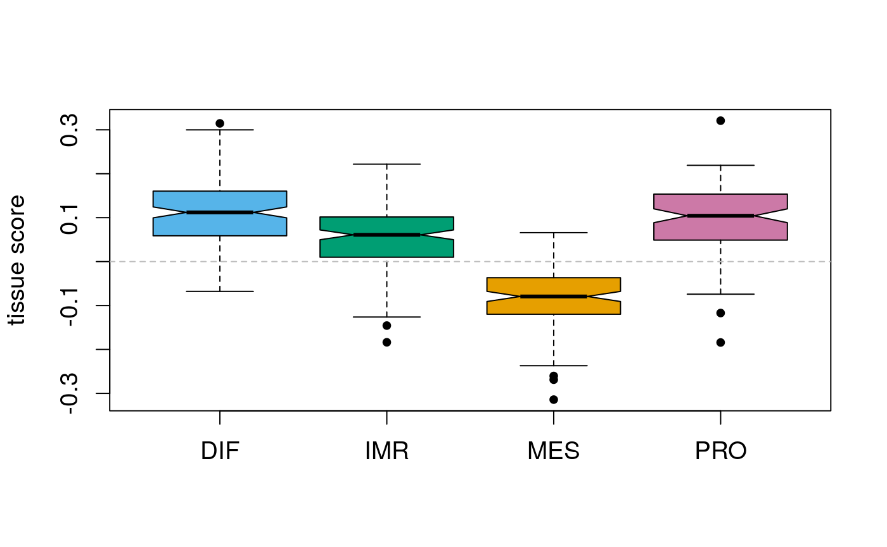
Prepare data for visualization:
sc.file <- file.path(data.dir, "scRNAseq_consensusOV_genes.txt") sc.expr <- as.matrix(read.delim(sc.file, row.names=1L)) ind <- intersect(rownames(sc.expr), names(se)) se.restr <- se[ind, ]
Heatmap:
margin.ramp <- circlize::colorRamp2( seq(quantile(margins, 0.01), quantile(margins, 0.99), length = 3), c("blue", "#EEEEEE", "red")) tscore.ramp <- circlize::colorRamp2( seq(quantile(tsc$scores, 0.01), quantile(tsc$scores, 0.99), length = 3), c("blue", "#EEEEEE", "red")) df <- data.frame(Subtype = sts, Margin = margins, Origin = tsc$tissues, Score = tsc$scores) scol <- list(Subtype = stcols, Margin = margin.ramp, Origin = c(OSE = cb.red, FT = cb.blue), Score = tscore.ramp) ha <- HeatmapAnnotation(df = df, col = scol, gap = unit(c(0, 2, 0), "mm")) Heatmap(assay(se.restr) - rowMeans(assay(se.restr)) , top_annotation = ha, name="Expr", show_row_names=FALSE, show_column_names=FALSE, column_title="Tumors", row_title="Genes")
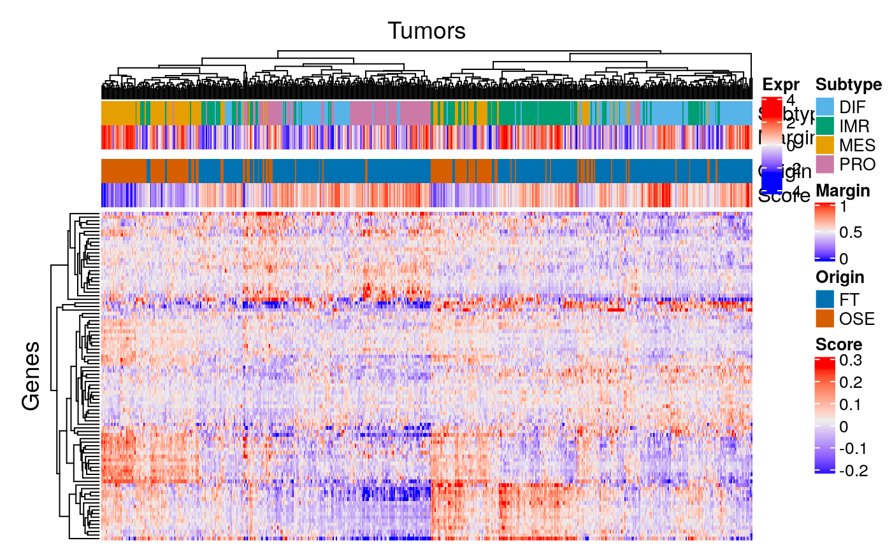
sts <- as.vector(cst$consensusOV.subtypes) sts <- sub("_consensus$", "", sts) names(sts) <- substring(colnames(ov.ctd[[1]]), 1, 12) sts <- sts[rownames(colData(ov.ctd))] dat <- cbind(sts, colData(ov.ctd)[,c("patient.stage_event.clinical_stage")]) (tab <- table(dat[,1], dat[,2]))
##
## stage ia stage ib stage ic stage iia stage iib stage iic stage iiia
## DIF 2 2 6 0 0 6 3
## IMR 0 1 2 2 4 9 3
## MES 0 0 0 0 0 0 0
## PRO 1 0 2 1 0 4 2
##
## stage iiib stage iiic stage iv
## DIF 4 113 27
## IMR 12 106 22
## MES 1 101 26
## PRO 7 82 10Overall proportions:
##
## DIF IMR MES PRO
## 0.2902655 0.2867257 0.2283186 0.1946903tab[,"stage iiic"] / sum(tab[,"stage iiic"])
## DIF IMR MES PRO
## 0.2810945 0.2636816 0.2512438 0.2039801Stage I tumors:
## [1] 16## DIF IMR MES PRO
## 0.6250 0.1875 0.0000 0.1875rfprobs <- cst$rf.probs rownames(rfprobs) <- substring(colnames(ov.ctd[[1]]), 1, 12) rfprobs <- rfprobs[rownames(colData(ov.ctd)),] rfprobs[dat[,2] %in% c("stage ia", "stage ib", "stage ic"),]
## IMR_consensus DIF_consensus PRO_consensus MES_consensus
## TCGA-04-1335 0.032 0.878 0.040 0.050
## TCGA-04-1360 0.220 0.196 0.364 0.220
## TCGA-04-1516 0.424 0.550 0.002 0.024
## TCGA-09-1675 0.054 0.784 0.094 0.068
## TCGA-09-2043 0.276 0.680 0.026 0.018
## TCGA-09-2055 0.166 0.640 0.142 0.052
## TCGA-57-1992 0.108 0.176 0.522 0.194
## TCGA-59-2349 0.246 0.616 0.072 0.066
## TCGA-61-1722 0.962 0.012 0.012 0.014
## TCGA-61-1727 0.990 0.008 0.000 0.002
## TCGA-61-1730 0.138 0.264 0.552 0.046
## TCGA-61-1734 0.280 0.680 0.018 0.022
## TCGA-61-1903 0.414 0.560 0.014 0.012
## TCGA-61-2018 0.352 0.572 0.022 0.054
## TCGA-61-2087 0.474 0.468 0.022 0.036
## TCGA-61-2096 0.234 0.536 0.144 0.086Odds ratio of being stage I and DIF:
de <- sum(tab[1,1:3]) dn <- sum(tab[2:4,1:3]) he <- sum(tab[1,7:10]) hn <- sum(tab[2:4,7:10]) fisher.test(matrix(c(de, he, dn, hn), nrow = 2 ))
##
## Fisher's Exact Test for Count Data
##
## data: matrix(c(de, he, dn, hn), nrow = 2)
## p-value = 0.00883
## alternative hypothesis: true odds ratio is not equal to 1
## 95 percent confidence interval:
## 1.355997 14.342871
## sample estimates:
## odds ratio
## 4.204473Odds ratio of being stage I-II and DIF/IMR:
de <- sum(tab[1:2,1:6]) dn <- sum(tab[3:4,1:6]) he <- sum(tab[1:2,7:10]) hn <- sum(tab[3:4,7:10]) fisher.test(matrix(c(de, he, dn, hn), nrow = 2 ))
##
## Fisher's Exact Test for Count Data
##
## data: matrix(c(de, he, dn, hn), nrow = 2)
## p-value = 0.001725
## alternative hypothesis: true odds ratio is not equal to 1
## 95 percent confidence interval:
## 1.485114 8.542715
## sample estimates:
## odds ratio
## 3.349577Obtain the supplementary file from GEO
raw.dat <- read.delim("GSE101108_OV106-391_counts.txt", row.names = 1L) raw.dat <- as.matrix(raw.dat) mode(raw.dat) <- "numeric" raw.dat <- edgeR::cpm(raw.dat, log=TRUE) raw.se <- SummarizedExperiment(assays = list(raw = raw.dat)) raw.se <- EnrichmentBrowser::idMap(raw.se, org="hsa", from="ENSEMBL", to="ENTREZID") cst <- consensusOV::get.consensus.subtypes(assay(raw.se), names(raw.se))
Obtain pre-computed consensus subtype annotation and histotype annotation
res.file <- file.path(data.dir, "GSE101108_consensus_subtypes.rds") cst <- readRDS(res.file) map.file <- file.path(data.dir, "GSE101108_metadata_histotype.txt") map <- read.delim(map.file, as.is = TRUE) head(map)
## Sample.name title source.name organism
## 1 OV106 Tumor_OV106 Primary invasive ovarian carcinomas Human
## 2 OV131 Tumor_OV131 Primary invasive ovarian carcinomas Human
## 3 OV135 Tumor_OV135 Primary invasive ovarian carcinomas Human
## 4 OV151 Tumor_OV151 Primary invasive ovarian carcinomas Human
## 5 OV152 Tumor_OV152 Primary invasive ovarian carcinomas Human
## 6 OV155 Tumor_OV155 Primary invasive ovarian carcinomas Human
## characteristics..FIGO.stage characteristics..age characteristics..histotype
## 1 II 39 MC
## 2 I 58 EC
## 3 I 64 CCC
## 4 I 67 EC
## 5 II 61 EC
## 6 II 64 EC
## molecule description processed.data.file
## 1 Total RNA Paired-end strand-specific RNA libraries OV106-391_counts.txt
## 2 Total RNA Paired-end strand-specific RNA libraries OV106-391_counts.txt
## 3 Total RNA Paired-end strand-specific RNA libraries OV106-391_counts.txt
## 4 Total RNA Paired-end strand-specific RNA libraries OV106-391_counts.txt
## 5 Total RNA Paired-end strand-specific RNA libraries OV106-391_counts.txt
## 6 Total RNA Paired-end strand-specific RNA libraries OV106-391_counts.txt
## raw.file
## 1 2_150617_AC6VVCANXX_P1767_106_1_val_1.fq.gz
## 2 2_150617_AC6VVCANXX_P1767_131_1_val_1.fq.gz
## 3 1_150617_AC6VVCANXX_P1767_135_1_val_1.fq.gz
## 4 1_150617_AC6VVCANXX_P1767_151_1_val_1.fq.gz
## 5 1_150617_AC6VVCANXX_P1767_152_1_val_1.fq.gz
## 6 1_150617_AC6VVCANXX_P1767_155_1_val_1.fq.gz
## raw.file.1
## 1 2_150617_AC6VVCANXX_P1767_106_2_val_2.fq.gz
## 2 2_150617_AC6VVCANXX_P1767_131_2_val_2.fq.gz
## 3 1_150617_AC6VVCANXX_P1767_135_2_val_2.fq.gz
## 4 1_150617_AC6VVCANXX_P1767_151_2_val_2.fq.gz
## 5 1_150617_AC6VVCANXX_P1767_152_2_val_2.fq.gz
## 6 1_150617_AC6VVCANXX_P1767_155_2_val_2.fq.gz## [1] TRUEcolnames(map) <- sub("^characteristics..", "", colnames(map)) map[,"histotype"] <- gsub(" ", "", map[,"histotype"]) map[,"FIGO.stage"] <- gsub(" ", "", map[,"FIGO.stage"]) table(map[,"histotype"])
##
## CCC EC HGSC LgSC MC
## 17 17 50 1 11table(map[,"FIGO.stage"])
##
## I II
## 64 32table(map[,"FIGO.stage"], map[,"histotype"])
##
## CCC EC HGSC LgSC MC
## I 14 12 29 0 9
## II 3 5 21 1 2hgsc.ind <- map[,"histotype"] == "HGSC" stageI.ind <- map[,"FIGO.stage"] == "I" stageII.ind <- map[,"FIGO.stage"] == "II" table(cst$consensusOV.subtypes[hgsc.ind])
##
## IMR_consensus DIF_consensus PRO_consensus MES_consensus
## 20 14 11 5table(cst$consensusOV.subtypes[hgsc.ind & stageI.ind])
##
## IMR_consensus DIF_consensus PRO_consensus MES_consensus
## 8 11 7 3table(cst$consensusOV.subtypes[hgsc.ind & stageII.ind])
##
## IMR_consensus DIF_consensus PRO_consensus MES_consensus
## 12 3 4 2cst$rf.probs[hgsc.ind & stageI.ind,]
## IMR_consensus DIF_consensus PRO_consensus MES_consensus
## OV172 0.966 0.016 0.010 0.008
## OV201 0.036 0.802 0.114 0.048
## OV205 0.546 0.128 0.154 0.172
## OV303 0.414 0.346 0.122 0.118
## OV305 0.030 0.080 0.846 0.044
## OV311 0.252 0.226 0.418 0.104
## OV314 0.128 0.746 0.070 0.056
## OV315 0.346 0.438 0.124 0.092
## OV318 0.380 0.436 0.122 0.062
## OV321 0.012 0.026 0.942 0.020
## OV325 0.672 0.148 0.100 0.080
## OV326 0.080 0.810 0.050 0.060
## OV329 0.052 0.362 0.532 0.054
## OV342 0.668 0.280 0.018 0.034
## OV344 0.490 0.468 0.020 0.022
## OV346 0.064 0.186 0.198 0.552
## OV348 0.866 0.072 0.018 0.044
## OV352 0.026 0.100 0.846 0.028
## OV353 0.118 0.412 0.280 0.190
## OV359 0.062 0.846 0.048 0.044
## OV360 0.158 0.266 0.330 0.246
## OV362 0.106 0.028 0.026 0.840
## OV363 0.262 0.654 0.022 0.062
## OV366 0.826 0.094 0.040 0.040
## OV370 0.148 0.012 0.020 0.820
## OV376 0.080 0.384 0.168 0.368
## OV377 0.066 0.768 0.036 0.130
## OV383 0.346 0.418 0.174 0.062
## OV390 0.002 0.006 0.974 0.018library(MetaGxOvarian) esets <- MetaGxOvarian::loadOvarianEsets()[[1]]
Identifying early-stage HGS ovarian tumors:
stageI.hgs <- lapply(esets, function(eset) eset$histological_type == "ser" & eset$tumorstage == 1 & eset$summarygrade == "high") nr.stageI <- vapply(stageI.hgs, function(x) sum(x, na.rm = TRUE), integer(1)) sum(nr.stageI)
## [1] 52early.hgs <- lapply(esets, function(eset) eset$histological_type == "ser" & eset$summarystage == "early" & eset$summarygrade == "high") nr.early <- vapply(early.hgs, function(x) sum(x, na.rm = TRUE), integer(1)) sum(nr.early)
## [1] 95for(i in seq_along(esets)) colnames(fData(esets[[i]]))[c(1,3)] <- c("PROBEID", "ENTREZID") esets <- lapply(esets, EnrichmentBrowser::probe2gene) for(i in seq_along(esets)) assay(esets[[i]]) <- EnrichmentBrowser:::.naTreat(assay(esets[[i]])) cst <- list() for(i in seq_along(esets)) { message(names(esets)[i]) cst[[i]] <- get.consensus.subtypes(assay(esets[[i]]), rownames(esets[[i]])) } saveRDS()
res.file <- file.path(data.dir, "MetaGxOvarian_consensus_subtypes.rds") cst <- readRDS(res.file) tab <- vapply(c(1:6,8:length(esets)), function(i) table(cst[[i]]$consensusOV.subtypes[stageI.hgs[[i]]]), integer(4)) colSums(t(tab))
## IMR_consensus DIF_consensus PRO_consensus MES_consensus
## 19 24 6 3## R version 4.0.0 (2020-04-24)
## Platform: x86_64-pc-linux-gnu (64-bit)
## Running under: Ubuntu 18.04.5 LTS
##
## Matrix products: default
## BLAS/LAPACK: /usr/lib/x86_64-linux-gnu/libopenblasp-r0.2.20.so
##
## locale:
## [1] LC_CTYPE=en_US.UTF-8 LC_NUMERIC=C
## [3] LC_TIME=en_US.UTF-8 LC_COLLATE=en_US.UTF-8
## [5] LC_MONETARY=en_US.UTF-8 LC_MESSAGES=C
## [7] LC_PAPER=en_US.UTF-8 LC_NAME=C
## [9] LC_ADDRESS=C LC_TELEPHONE=C
## [11] LC_MEASUREMENT=en_US.UTF-8 LC_IDENTIFICATION=C
##
## attached base packages:
## [1] grid parallel stats4 stats graphics grDevices utils
## [8] datasets methods base
##
## other attached packages:
## [1] MetaGxOvarian_1.8.0 ExperimentHub_1.14.2
## [3] AnnotationHub_2.20.2 BiocFileCache_1.12.1
## [5] dbplyr_1.4.4 impute_1.62.0
## [7] lattice_0.20-41 org.Hs.eg.db_3.11.4
## [9] AnnotationDbi_1.50.3 SingleR_1.2.4
## [11] DropletUtils_1.8.0 curatedTCGAData_1.10.1
## [13] MultiAssayExperiment_1.14.0 ggplot2_3.3.2
## [15] ComplexHeatmap_2.4.3 EnrichmentBrowser_2.18.2
## [17] graph_1.66.0 RaggedExperiment_1.12.0
## [19] consensusOV_1.10.0 subtypeHeterogeneity_1.0.4
## [21] SingleCellExperiment_1.10.1 SummarizedExperiment_1.18.2
## [23] DelayedArray_0.14.1 matrixStats_0.57.0
## [25] Biobase_2.48.0 GenomicRanges_1.40.0
## [27] GenomeInfoDb_1.24.2 IRanges_2.22.2
## [29] S4Vectors_0.26.1 BiocGenerics_0.34.0
## [31] knitr_1.30
##
## loaded via a namespace (and not attached):
## [1] R.utils_2.10.1 tidyselect_1.1.0
## [3] RSQLite_2.2.1 BiocParallel_1.22.0
## [5] munsell_0.5.0 codetools_0.2-16
## [7] ragg_0.4.0 withr_2.3.0
## [9] colorspace_1.4-1 labeling_0.3
## [11] KEGGgraph_1.48.0 GenomeInfoDbData_1.2.3
## [13] pheatmap_1.0.12 bit64_4.0.5
## [15] farver_2.0.3 rhdf5_2.32.4
## [17] rprojroot_1.3-2 vctrs_0.3.4
## [19] generics_0.0.2 xfun_0.18
## [21] randomForest_4.6-14 R6_2.4.1
## [23] clue_0.3-57 rsvd_1.0.3
## [25] RJSONIO_1.3-1.4 locfit_1.5-9.4
## [27] AnnotationFilter_1.12.0 bitops_1.0-6
## [29] assertthat_0.2.1 promises_1.1.1
## [31] scales_1.1.1 gtable_0.3.0
## [33] ensembldb_2.12.1 rlang_0.4.8
## [35] systemfonts_0.3.2 GlobalOptions_0.1.2
## [37] splines_4.0.0 rtracklayer_1.48.0
## [39] lazyeval_0.2.2 BiocManager_1.30.10
## [41] yaml_2.2.1 reshape2_1.4.4
## [43] GenomicFeatures_1.40.1 backports_1.1.10
## [45] httpuv_1.5.4 tools_4.0.0
## [47] TCGAutils_1.8.1 ellipsis_0.3.1
## [49] RColorBrewer_1.1-2 Rcpp_1.0.5
## [51] plyr_1.8.6 progress_1.2.2
## [53] zlibbioc_1.34.0 purrr_0.3.4
## [55] RCurl_1.98-1.2 prettyunits_1.1.1
## [57] openssl_1.4.3 GetoptLong_1.0.3
## [59] viridis_0.5.1 cluster_2.1.0
## [61] fs_1.5.0 magrittr_1.5
## [63] data.table_1.13.0 circlize_0.4.10
## [65] ProtGenerics_1.20.0 hms_0.5.3
## [67] mime_0.9 evaluate_0.14
## [69] GSVA_1.36.3 xtable_1.8-4
## [71] XML_3.99-0.5 gridExtra_2.3
## [73] shape_1.4.5 compiler_4.0.0
## [75] biomaRt_2.44.1 tibble_3.0.3
## [77] crayon_1.3.4 R.oo_1.24.0
## [79] htmltools_0.5.0 later_1.1.0.1
## [81] DBI_1.1.0 rappdirs_0.3.1
## [83] EnsDb.Hsapiens.v75_2.99.0 Matrix_1.2-18
## [85] readr_1.4.0 gdata_2.18.0
## [87] R.methodsS3_1.8.1 pkgconfig_2.0.3
## [89] pkgdown_1.6.1 GenomicAlignments_1.24.0
## [91] RCircos_1.2.1 xml2_1.3.2
## [93] annotate_1.66.0 dqrng_0.2.1
## [95] XVector_0.28.0 rvest_0.3.6
## [97] stringr_1.4.0 digest_0.6.25
## [99] Biostrings_2.56.0 rmarkdown_2.4
## [101] fastmatch_1.1-0 edgeR_3.30.3
## [103] DelayedMatrixStats_1.10.1 GSEABase_1.50.1
## [105] curl_4.3 gtools_3.8.2
## [107] shiny_1.5.0 Rsamtools_2.4.0
## [109] rjson_0.2.20 lifecycle_0.2.0
## [111] GenomicDataCommons_1.12.0 jsonlite_1.7.1
## [113] Rhdf5lib_1.10.1 BiocNeighbors_1.6.0
## [115] desc_1.2.0 viridisLite_0.3.0
## [117] askpass_1.1 limma_3.44.3
## [119] pillar_1.4.6 fastmap_1.0.1
## [121] httr_1.4.2 survival_3.2-7
## [123] interactiveDisplayBase_1.26.3 glue_1.4.2
## [125] png_0.1-7 shinythemes_1.1.2
## [127] BiocVersion_3.11.1 bit_4.0.4
## [129] stringi_1.5.3 HDF5Array_1.16.1
## [131] blob_1.2.1 textshaping_0.1.2
## [133] BiocSingular_1.4.0 memoise_1.1.0
## [135] RTCGAToolbox_2.18.0 dplyr_1.0.2
## [137] irlba_2.3.3